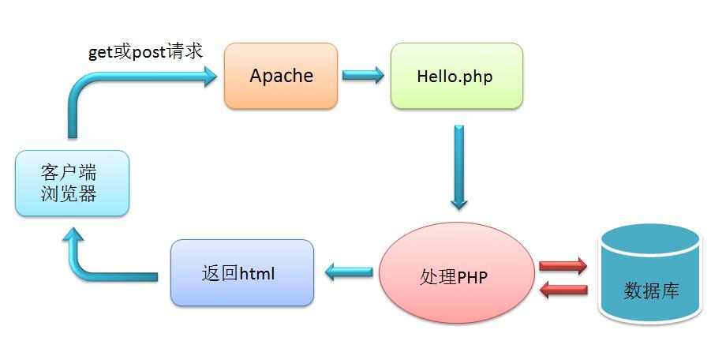
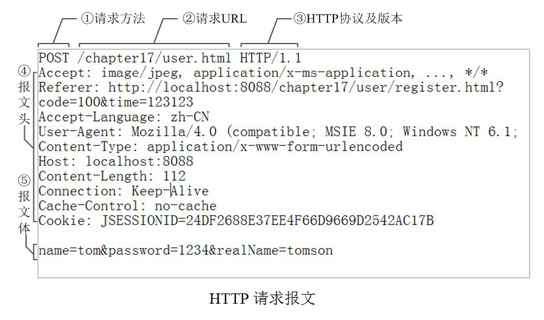
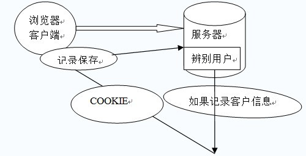

<!DOCTYPE html><html><head><meta charset="utf-8"><title>教学讲义 | 技术学派</title><meta name="viewport" content="width=device-width,initial-scale=1,maximum-scale=1"><meta name="description" content="第一章 网站介绍本章主要了解网络服务器架构与布局第一节 认识软件结构1. C/S 软件(Client / Server)通过客户端和服务器进行通信的软件优势：功能完善，效果很炫劣势：必须下载，经常升级2. B/S软件(Browser / Server)通过浏览器和服务器进行通信的软件优势：不用下载，不用更新，打开网页，直接使用劣势：功能受限（受浏览器环境限制）3.软件运行机制客户端给服务器发请求，"><meta property="og:type" content="website"><meta property="og:title" content="教学讲义"><meta property="og:url" content="http://www.JiShuXuePai.com/tech/php/notes.html"><meta property="og:site_name" content="技术学派"><meta property="og:description" content="第一章 网站介绍本章主要了解网络服务器架构与布局第一节 认识软件结构1. C/S 软件(Client / Server)通过客户端和服务器进行通信的软件优势：功能完善，效果很炫劣势：必须下载，经常升级2. B/S软件(Browser / Server)通过浏览器和服务器进行通信的软件优势：不用下载，不用更新，打开网页，直接使用劣势：功能受限（受浏览器环境限制）3.软件运行机制客户端给服务器发请求，"><meta property="og:locale" content="zh-CN"><meta property="og:image" content="http://www.jishuxuepai.com/tech/php/images/php.jpg"><meta property="og:updated_time" content="2018-05-11T08:14:18.285Z"><meta name="twitter:card" content="summary"><meta name="twitter:title" content="教学讲义"><meta name="twitter:description" content="第一章 网站介绍本章主要了解网络服务器架构与布局第一节 认识软件结构1. C/S 软件(Client / Server)通过客户端和服务器进行通信的软件优势：功能完善，效果很炫劣势：必须下载，经常升级2. B/S软件(Browser / Server)通过浏览器和服务器进行通信的软件优势：不用下载，不用更新，打开网页，直接使用劣势：功能受限（受浏览器环境限制）3.软件运行机制客户端给服务器发请求，"><meta name="twitter:image" content="http://www.jishuxuepai.com/tech/php/images/php.jpg"><link rel="stylesheet" href="/libs/bootstrap/bootstrap-grid.css"><link rel="stylesheet" href="/libs/font-awesome/css/font-awesome.min.css"><link rel="stylesheet" href="/libs/titillium-web/styles.css"><link rel="stylesheet" href="/libs/source-code-pro/styles.css"><link rel="stylesheet" href="/css/style.css"><script src="/libs/jquery/jquery.min.js"></script><link rel="stylesheet" href="/libs/lightgallery/css/lightgallery.min.css"><link rel="stylesheet" href="/libs/justified-gallery/justifiedGallery.min.css"><script>var _hmt=_hmt||[];!function(){var e=document.createElement("script");e.src="//hm.baidu.com/hm.js?4c1bd812de3c30edbaa2b803c66f0a04";var t=document.getElementsByTagName("script")[0];t.parentNode.insertBefore(e,t)}()</script></head></html><body><div id="wrap"><header id="header"><div id="header-outer" class="outer"><div class="container"><div class="container-inner"><div id="header-title"><h1 class="logo-wrap"><a href="/" class="logo"></a></h1></div><div id="header-inner" class="nav-container"><a id="main-nav-toggle" class="nav-icon fa fa-bars">菜单</a><div class="nav-container-inner"><ul id="main-nav"><li class="main-nav-list-item"><a class="main-nav-list-link" href="/">主页</a></li><li class="main-nav-list-item"><a class="main-nav-list-link" href="/edu/index.html">学编程</a></li><li class="main-nav-list-item"><a class="main-nav-list-link" href="/blog/">博客</a></li><li class="main-nav-list-item"><a class="main-nav-list-link" href="/nav.html">网站导航</a></li><li class="main-nav-list-item"><a class="main-nav-list-link" href="/tips.html">学习建议</a></li></ul><nav id="sub-nav"><div id="search-form-wrap"><form class="search-form"><input type="text" class="ins-search-input search-form-input" placeholder="搜索"> <button type="submit" class="search-form-submit"></button></form><div class="ins-search"><div class="ins-search-mask"></div><div class="ins-search-container"><div class="ins-input-wrapper"><input type="text" class="ins-search-input" placeholder="想要查找什么..."> <span class="ins-close ins-selectable"><i class="fa fa-times-circle"></i></span></div><div class="ins-section-wrapper"><div class="ins-section-container"></div></div></div></div><script>window.INSIGHT_CONFIG={TRANSLATION:{POSTS:"文章",PAGES:"页面",CATEGORIES:"分类",TAGS:"标签",UNTITLED:"(未命名)"},ROOT_URL:"/",CONTENT_URL:"/content.json"}</script><script src="/js/insight.js"></script></div></nav></div></div></div></div></div></header><div class="container"><div class="main-body container-inner"><div class="main-body-inner"><section id="main"><div class="main-body-header"><h1 class="header"><em class="page-title-link" data-url="/tech/php/notes.html">教学讲义</em><div class="author">江卫</div></h1></div><div class="main-body-content"><article id="page-" class="article article-single article-type-page" itemscope itemprop="blogPost"><div class="article-inner"><header class="article-header"><h1 class="article-title" itemprop="name">教学讲义</h1></header><div class="article-entry" itemprop="articleBody"><h1 id="第一章-网站介绍"><a href="#第一章-网站介绍" class="headerlink" title="第一章 网站介绍"></a>第一章 网站介绍</h1><blockquote><p>本章主要了解网络服务器架构与布局</p></blockquote><h2 id="第一节-认识软件结构"><a href="#第一节-认识软件结构" class="headerlink" title="第一节 认识软件结构"></a>第一节 认识软件结构</h2><h3 id="1-C-S-软件-Client-Server"><a href="#1-C-S-软件-Client-Server" class="headerlink" title="1. C/S 软件(Client / Server)"></a>1. C/S 软件(Client / Server)</h3><ul><li>通过客户端和服务器进行通信的软件</li><li>优势：功能完善，效果很炫</li><li>劣势：必须下载，经常升级</li></ul><h3 id="2-B-S软件-Browser-Server"><a href="#2-B-S软件-Browser-Server" class="headerlink" title="2. B/S软件(Browser / Server)"></a>2. B/S软件(Browser / Server)</h3><ul><li>通过浏览器和服务器进行通信的软件</li><li>优势：不用下载，不用更新，打开网页，直接使用</li><li>劣势：功能受限（受浏览器环境限制）</li></ul><h3 id="3-软件运行机制"><a href="#3-软件运行机制" class="headerlink" title="3.软件运行机制"></a>3.软件运行机制</h3><ul><li>客户端给服务器发请求，服务器处理客户请求返回结果</li></ul><h2 id="第二节-动态网站"><a href="#第二节-动态网站" class="headerlink" title="第二节 动态网站"></a>第二节 动态网站</h2><h3 id="1-概念"><a href="#1-概念" class="headerlink" title="1. 概念"></a>1. 概念</h3><ul><li>误区：不是指网站当中包含动态图片、滚动图等动态效果</li><li>正解：采用数据库技术开发的网站，网页上的内容都是通过数据库提取出来动态更新的</li></ul><h3 id="2-使用技术"><a href="#2-使用技术" class="headerlink" title="2. 使用技术"></a>2. 使用技术</h3><ul><li>前端：html+css+javascript</li><li>后端：php、asp、java</li><li>数据库：MySQL、SQLServer、ORACLE、DB2</li></ul><h3 id="3-运行原理"><a href="#3-运行原理" class="headerlink" title="3. 运行原理"></a>3. 运行原理</h3><ul><li>get请求 ：从服务器上获取数据</li></ul><ul><li><p>post请求：向服务器传送数据</p><p></p></li></ul><h2 id="第三节-http协议"><a href="#第三节-http协议" class="headerlink" title="第三节 http协议"></a>第三节 http协议</h2><ul><li><p>HTTP（超文本传输协议）是一个基于请求与响应模式的、无状态的、应用层的协议，常基于TCP的连接方式，HTTP1.1版本中给出一种持续连接的机制，绝大多数的Web开发，都是构建在HTTP协议之上的Web应用。</p><p>​</p></li><li><p>HTTP URL：统一资源定位符，用于向服务器发送查询信息，</p><p></p></li></ul><h2 id="第四节-动态网站开发所需构件"><a href="#第四节-动态网站开发所需构件" class="headerlink" title="第四节 动态网站开发所需构件"></a>第四节 动态网站开发所需构件</h2><h3 id="1-web前端开发"><a href="#1-web前端开发" class="headerlink" title="1.web前端开发"></a>1.web前端开发</h3><ul><li>HTML</li><li>CSS</li><li>javascript</li><li>浏览器</li></ul><h3 id="2-Web后端开发（服务器端）"><a href="#2-Web后端开发（服务器端）" class="headerlink" title="2. Web后端开发（服务器端）"></a>2. Web后端开发（服务器端）</h3><ul><li>web服务器：<strong>Apache</strong>、IIS、Tomcat…</li><li>数据库：<strong>MySQL</strong>、MariaDB、Oracle、SQL Server…</li><li>服务器端编程语言：<strong>PHP</strong>、ASP、JSP…</li></ul><h2 id="第五节-php语言简介"><a href="#第五节-php语言简介" class="headerlink" title="第五节 php语言简介"></a>第五节 php语言简介</h2><blockquote><p>PHP（原名Personal Home Page的缩写，已经正式更名为 “PHP: Hypertext Preprocessor”，中文名：“超文本预处理器”）是一种通用开源脚本语言。语法吸收了C语言、Java和Perl的特点，利于学习，使用广泛，主要适用于Web开发领域。PHP 独特的语法混合了C、Java、Perl以及PHP自创的语法。用PHP做出的动态页面与其他的编程语言相比，PHP是将程序嵌入到HTML文档中，执行效率很高。</p></blockquote><h3 id="1-php的诞生"><a href="#1-php的诞生" class="headerlink" title="1.php的诞生"></a>1.php的诞生</h3><p>在1994年，他设计了PHP的第一个版本PHP1.0，并于1995年将其通过社区发布。在1996年，Rasmus Lerdorf又设计了PHP2，在1998年，由于Zeev Suraski和Andi Gutmans当时正在做毕业设计，需要一个用于开发Web程序的语言，他们也考虑了asp和jsp，但由于ASP只能运行在Windows平台，而JSP又过于复杂，因此，他们最后选择了PHP，但他们发现，PHP的功能当时还十分有限，因此，他们决定为PHP重新编写底层的解析程序，这就是PHP的第一个被广泛使用的版本—-PHP3.0。</p><p></p><p><strong>PHP 是最好的语言 ^_^</strong></p><p>某女:你能让这个论坛的人都吵起来,我今晚就跟你走.<br>某软件工程师:PHP是最好的语言!<br>某论坛炸锅了,各种吵架…<br>某女:服了你了,我们走吧 你想干啥都行.<br>某软件工程师:今天不行,我一定要说服他们,PHP必须是最好的语言<br>某女：…….</p><p>php和最好的语言几乎没有关系。一般用来讽刺一些没见过世面，把自己归属于某一种编程语言的语言教徒。</p><p>事实上每一门语言都有其设计的灵魂，有它的取舍。很难说什么是最好的。比起做个脑残粉总是鼓吹自己擅长的语言，不如多学几门语言，开阔视野。</p><p>PHP可能不是世界上最好的语言，但他一定是最适合新手学习编程的入门语言，也是进入Web开发领域的绝佳语言。</p><h3 id="2-php的优点"><a href="#2-php的优点" class="headerlink" title="2. php的优点"></a>2. php的优点</h3><ul><li><p><strong>简单易学</strong></p><p>既能面向过程，又能面向对象，安装后各种扩展集一身，包括但不限于mysql、json、mbstr等，方便至极。html和PHP混写，执行效率很高，最新版本都内置了小型webserver（连apache都不用）。</p></li><li><p><strong>日臻完善</strong></p><p>语言创建者积极上进优化。各大php论坛非常活跃，语言bug全世界的程序员和你一起修复。</p></li><li><p><strong>框架成熟</strong></p><p>框架层出不穷，国外Ci、laravel、kohana、zf，国内thinkphp功能完善，敏捷开发就靠它！！</p></li><li><p><strong>使用广泛</strong></p><p>最重要的是大小公司都用，全球前100万的站点中，有70%左右的站点用PHP开发，找工作不愁啊！！！！</p></li></ul><h3 id="3-php的缺点"><a href="#3-php的缺点" class="headerlink" title="3. php的缺点"></a>3. php的缺点</h3><ul><li><p><strong>标准库的函数名、参数顺序实在是难以预测</strong></p><p>例如：字符串操作系列函数，strpos、strcspn里两个词素没有任何分隔符，到了str_replace、str_repeat却又冒出了下划线</p></li><li><p><strong>协调性和可靠性</strong></p><p>例如：变量名是大小写敏感的，函数名和类名却是大小写不敏感的</p></li><li><p><strong>奇异的写法</strong></p><p>例如：数组末尾添加一个元素, \$arr[] = 1</p></li><li><p><strong>PHP的异常捕获系统非常异常</strong></p><p>很难说清楚到底哪些情况会抛出异常哪些并不会</p></li></ul><h2 id="第六节-php的开发环境"><a href="#第六节-php的开发环境" class="headerlink" title="第六节 php的开发环境"></a>第六节 php的开发环境</h2><h3 id="WAMP和LAMP"><a href="#WAMP和LAMP" class="headerlink" title="WAMP和LAMP"></a>WAMP和LAMP</h3><p>基于php的继承开发环境，速度快，成本低，易上手，易维护，稳定，应用广泛，其中：</p><ul><li>WAMP：Window操作系统 + Apache服务器 + MySQL数据库 + PHP服务器端脚本语言</li><li>LAMP：Linux操作系统 + Apache服务器 + MySQL数据库 + PHP服务器端脚本语言</li></ul><h1 id="第二章-环境配置"><a href="#第二章-环境配置" class="headerlink" title="第二章 环境配置"></a>第二章 环境配置</h1><h2 id="第一节-安装简介"><a href="#第一节-安装简介" class="headerlink" title="第一节 安装简介"></a>第一节 安装简介</h2><blockquote><p>众所周知，PHP是一门服务器端的脚本语言，要想使用这门语言，需要搭配相应的环境，方可使用</p></blockquote><h3 id="1-搭建"><a href="#1-搭建" class="headerlink" title="1. 搭建"></a>1. 搭建</h3><ul><li>首先，需要在网站上下载相应的软件到本地电脑。<br>推荐网址：_<a href="http://www.wampserver.com/【**注意选择符合你电脑的版本**】" target="_blank" rel="noopener">http://www.wampserver.com/【**注意选择符合你电脑的版本**】</a></li><li>然后，打开安装 【<strong>请勿安装到C盘</strong>】</li><li>最后，查看是否安装成功，右下角查看‘W’的图标是否为绿色</li></ul><h3 id="2-两项服务，一个模块"><a href="#2-两项服务，一个模块" class="headerlink" title="2. 两项服务，一个模块"></a>2. 两项服务，一个模块</h3><blockquote><p>环境安装成功之后，共有两项服务，一个模块是需要我们作为重点了解的</p></blockquote><ul><li>Apache 服务</li><li>MySQL 服务</li><li>PHP 模块</li></ul><h3 id="3-配置文件"><a href="#3-配置文件" class="headerlink" title="3. 配置文件"></a>3. 配置文件</h3><blockquote><p>配置文件是每一项服务的核心，配置文件缺失或修改错误，将导致服务无法正常运行</p></blockquote><ul><li>Apache服务配置文件：<strong>D:\wamp\bin\apache\apache2.4.23\conf\httpd.conf</strong></li><li>MySQL服务配置文件：<strong>D:\wamp\bin\mysql\mysql5.7.14\my.ini</strong></li><li>PHP模块配置文件：<strong>D:\wamp\bin\apache\apache2.4.23\bin\php.ini</strong></li></ul><p><strong>注意</strong></p><p>配置文件修改后，必须重启服务</p><h3 id="4-www目录"><a href="#4-www目录" class="headerlink" title="4. www目录"></a>4. www目录</h3><p>在wamp目录下，是网站的根目录，开发的所有文件，都要放在www目录中，通过浏览器输入localhost访问本地服务器</p><h3 id="5-localhost"><a href="#5-localhost" class="headerlink" title="5. localhost"></a>5. localhost</h3><p>本地服务器，安装了wamp软件的你的电脑，既是客户机，又是服务器，通过浏览器访问的是你本地的服务器，故名称为 localhost</p><h1 id="第三章-PHP基础"><a href="#第三章-PHP基础" class="headerlink" title="第三章 PHP基础"></a>第三章 PHP基础</h1><h2 id="第一节-第一个PHP文件"><a href="#第一节-第一个PHP文件" class="headerlink" title="第一节 第一个PHP文件"></a>第一节 第一个PHP文件</h2><h3 id="1-文件命名"><a href="#1-文件命名" class="headerlink" title="1. 文件命名"></a>1. 文件命名</h3><ul><li>文件后缀名为 .php</li><li>文件名中不可包含中文、空格、特殊符号</li><li>建议使用有意义的英文单词命名</li></ul><h3 id="2-编码格式-UTF-8"><a href="#2-编码格式-UTF-8" class="headerlink" title="2. 编码格式(UTF-8)"></a>2. 编码格式(UTF-8)</h3><h3 id="3-语言标记"><a href="#3-语言标记" class="headerlink" title="3. 语言标记"></a>3. 语言标记</h3><figure class="highlight php"><table><tr><td class="gutter"><pre><span class="line">1</span><br><span class="line">2</span><br><span class="line">3</span><br><span class="line">4</span><br><span class="line">5</span><br><span class="line">6</span><br><span class="line">7</span><br><span class="line">8</span><br><span class="line">9</span><br><span class="line">10</span><br><span class="line">11</span><br><span class="line">12</span><br><span class="line">13</span><br><span class="line">14</span><br><span class="line">15</span><br><span class="line">16</span><br><span class="line">17</span><br><span class="line">18</span><br><span class="line">19</span><br><span class="line">20</span><br><span class="line">21</span><br></pre></td><td class="code"><pre><span class="line"><span class="comment">//标准风格</span></span><br><span class="line"><span class="meta">&lt;?php</span> </span><br><span class="line">	.......</span><br><span class="line"><span class="meta">?&gt;</span></span><br><span class="line"></span><br><span class="line"><span class="comment">//短风格</span></span><br><span class="line"><span class="meta">&lt;?</span> </span><br><span class="line">  .......</span><br><span class="line"><span class="meta">?&gt;</span></span><br><span class="line"></span><br><span class="line"><span class="comment">//不常见格式---------------------------------------------------------------</span></span><br><span class="line"></span><br><span class="line"><span class="comment">//长风格</span></span><br><span class="line">&lt;script language=<span class="string">'php'</span>&gt;</span><br><span class="line">	.....</span><br><span class="line">&lt;script&gt;</span><br><span class="line">  </span><br><span class="line"><span class="comment">//Asp风格</span></span><br><span class="line">&lt;% </span><br><span class="line">	......</span><br><span class="line">%&gt;</span><br></pre></td></tr></table></figure><p><strong>注意</strong></p><p>php的结束标签，在一些编码规范里面，纯php脚本文件里是必须忽略的。</p><p>为什么呢？<br>因为php只能运行在php标签里面的脚本，在脚本之外的所有字符，包括你看不见的空格或者回车，制表符号，都是作为输出内容会response到客户端的。这样就有可能会产生意想不到的事情。<br>为了避免这种错误，在编码规范里面经常会规定：库文件、或者一些class文件等只有纯php代码的文件是不能加结尾的?&gt;结束符的。</p><h3 id="4-注释符与结束符"><a href="#4-注释符与结束符" class="headerlink" title="4. 注释符与结束符"></a>4. 注释符与结束符</h3><figure class="highlight php"><table><tr><td class="gutter"><pre><span class="line">1</span><br><span class="line">2</span><br><span class="line">3</span><br><span class="line">4</span><br><span class="line">5</span><br></pre></td><td class="code"><pre><span class="line"><span class="comment">//单行注释</span></span><br><span class="line"><span class="comment">/*多行注释*/</span></span><br><span class="line"></span><br><span class="line"><span class="comment">//结束符使用英文分号 “;”</span></span><br><span class="line">$name=<span class="string">"hxsd"</span>;</span><br></pre></td></tr></table></figure><h3 id="5-常用命令和系统函数"><a href="#5-常用命令和系统函数" class="headerlink" title="5. 常用命令和系统函数"></a>5. 常用命令和系统函数</h3><ul><li><p><strong>echo</strong></p><p>echo输出 : 只能输出字符串、数字、布尔（true:1 false:不输出）类型的数据</p></li></ul><figure class="highlight php"><table><tr><td class="gutter"><pre><span class="line">1</span><br><span class="line">2</span><br><span class="line">3</span><br><span class="line">4</span><br><span class="line">5</span><br><span class="line">6</span><br><span class="line">7</span><br><span class="line">8</span><br><span class="line">9</span><br><span class="line">10</span><br><span class="line">11</span><br></pre></td><td class="code"><pre><span class="line"><span class="comment">//echo 输出</span></span><br><span class="line"><span class="meta">&lt;?php</span></span><br><span class="line">	<span class="keyword">echo</span> <span class="string">"&lt;h1&gt;hxsd&lt;/h1&gt;&lt;br&gt;"</span>;</span><br><span class="line"><span class="meta">?&gt;</span></span><br><span class="line"> </span><br><span class="line"><span class="comment">//短标签输出----------------------------------------------------------------------</span></span><br><span class="line"><span class="meta">&lt;?php</span></span><br><span class="line">	$name=<span class="string">"hxsd"</span>;<span class="comment">//定义变量</span></span><br><span class="line"><span class="meta">?&gt;</span></span><br><span class="line"></span><br><span class="line">&lt;h1&gt;<span class="meta">&lt;?</span>= $name <span class="meta">?&gt;</span>&lt;/h1&gt; <span class="comment">//html代码中输出</span></span><br></pre></td></tr></table></figure><ul><li><strong>var_dump()</strong></li></ul><p>var_dump() 打印变量的相关信息。此函数显示关于一个或多个表达式的结构信息，包括表达式的类型与值。数组将递归展开值，通过缩进显示其结构</p><figure class="highlight php"><table><tr><td class="gutter"><pre><span class="line">1</span><br><span class="line">2</span><br></pre></td><td class="code"><pre><span class="line">$a = <span class="keyword">array</span>(<span class="number">1</span>, <span class="number">2</span>, <span class="keyword">array</span>(<span class="string">"a"</span>, <span class="string">"b"</span>, <span class="string">"c"</span>));</span><br><span class="line">var_dump($a);</span><br></pre></td></tr></table></figure><p><strong>注意</strong>：<br>var_dump中的变量必须是存在的，如果变量存在但值是空，则返回false<br>没有变量时，则返回NULL<br>该函数有输出的功能，因此不必加其它的输出函数</p><ul><li><p><strong>require与include</strong></p><ol><li><p>require</p><p>常用于引入<code>重要</code>文件，若引入失败会直接影响到当前整个脚本，引入失败报<code>Error错误</code></p></li><li><p>include</p><p>常用于引入<code>普通</code>文件，若引入失败不会对当前脚本有较大的影响，引入失败报<code>Warning错误</code></p></li><li><p>require_once</p><p>避免重复引入，其他规则同上</p></li><li><p>include_once</p><p>避免重复引入，其他规则同上</p></li></ol></li><li><p><strong>header</strong></p><p>发送原生 HTTP 头，header() 必须在任何实际输出之前调用。</p><p></p></li></ul><h2 id="第三节-变量与常量"><a href="#第三节-变量与常量" class="headerlink" title="第三节 变量与常量"></a>第三节 变量与常量</h2><h3 id="1-变量"><a href="#1-变量" class="headerlink" title="1. 变量"></a>1. 变量</h3><ul><li>声明变量：$</li></ul><ul><li>命名规则：字母数字下划线、首字母不能为数字、严格区分大小写、且不能使用关键字！推荐驼峰命名法</li></ul><figure class="highlight php"><table><tr><td class="gutter"><pre><span class="line">1</span><br><span class="line">2</span><br><span class="line">3</span><br><span class="line">4</span><br></pre></td><td class="code"><pre><span class="line">$name = <span class="string">"赵四儿"</span>;<span class="comment">//string</span></span><br><span class="line">$sex = <span class="string">"男"</span>;</span><br><span class="line">$age = <span class="number">40</span>;<span class="comment">//integer</span></span><br><span class="line">$backGroundColor = <span class="string">"red"</span>;</span><br></pre></td></tr></table></figure><ul><li>变量销毁：unset(变量名)，被销毁的变量在内存中被释放</li><li>引用变量</li></ul><figure class="highlight php"><table><tr><td class="gutter"><pre><span class="line">1</span><br><span class="line">2</span><br><span class="line">3</span><br><span class="line">4</span><br></pre></td><td class="code"><pre><span class="line"><span class="comment">//变量引用：用不同的名字访问同一个变量内容</span></span><br><span class="line">$guangong=<span class="string">"hero"</span>; <span class="comment">//关公是英雄</span></span><br><span class="line">$guan2ye=&amp;$guangong;<span class="comment">//关公别名关二爷</span></span><br><span class="line">var_dump($guangong===$guan2ye);<span class="comment">//true 是同一个人</span></span><br></pre></td></tr></table></figure><h3 id="2-常量"><a href="#2-常量" class="headerlink" title="2. 常量"></a>2. 常量</h3><p>定义常量,使用define关键字，常量命名要全部大写，常量的数据类型不能是 资源、对象</p><figure class="highlight php"><table><tr><td class="gutter"><pre><span class="line">1</span><br><span class="line">2</span><br><span class="line">3</span><br><span class="line">4</span><br><span class="line">5</span><br></pre></td><td class="code"><pre><span class="line"><span class="comment">//定义常量</span></span><br><span class="line">define(<span class="string">"SCHOOL"</span>,<span class="string">"火星时代"</span>);</span><br><span class="line"></span><br><span class="line"><span class="comment">//判断常量</span></span><br><span class="line">var_dump( defined(<span class="string">"SCHOOL"</span>) );  <span class="comment">//true</span></span><br></pre></td></tr></table></figure><h3 id="3-变量与常量的差异"><a href="#3-变量与常量的差异" class="headerlink" title="3. 变量与常量的差异"></a>3. 变量与常量的差异</h3><table><thead><tr><th>差异</th><th>变量</th><th>常量</th></tr></thead><tbody><tr><td>定义</td><td>$声明</td><td>define()函数定义</td></tr><tr><td>命名</td><td>大小写敏感</td><td>必须大写（行业通行）</td></tr><tr><td>赋值</td><td>可以重新赋值</td><td>不能再赋值</td></tr><tr><td>数据类型</td><td>8种数据类型</td><td>只能是标量</td></tr><tr><td>销毁</td><td>unset() 销毁</td><td>不能销毁</td></tr><tr><td>判断方法</td><td>isset() 判断是否定义</td><td>defined() 判断是否定义</td></tr><tr><td>作用域</td><td>局部作用域</td><td>全局作用域</td></tr></tbody></table><h2 id="第四节-数据类型"><a href="#第四节-数据类型" class="headerlink" title="第四节 数据类型"></a>第四节 数据类型</h2><h3 id="1-八种数据类型"><a href="#1-八种数据类型" class="headerlink" title="1. 八种数据类型"></a>1. 八种数据类型</h3><ul><li>四种标量类型<ul><li>布尔型（boolean）</li><li>整 型（Integer）范围：2^32或2^64（超出自动转换为浮点型）</li><li>浮点型（float）范围：双精度</li><li>字符串（string）</li></ul></li><li>两种复合类型<ul><li>数组型（array）</li><li>对象型（object）</li></ul></li><li>两种特殊类型<ul><li>资源型（resource）</li><li>空 型（null）</li></ul></li></ul><figure class="highlight php"><table><tr><td class="gutter"><pre><span class="line">1</span><br><span class="line">2</span><br><span class="line">3</span><br><span class="line">4</span><br><span class="line">5</span><br><span class="line">6</span><br></pre></td><td class="code"><pre><span class="line"><span class="comment">//定义超出整型存储范围的变量，两者均为浮点型</span></span><br><span class="line">$number1 = <span class="number">-2147483648</span>;</span><br><span class="line">$number2 = <span class="number">2147483648</span>;</span><br><span class="line"></span><br><span class="line"><span class="comment">//打印变量</span></span><br><span class="line">var_dump($number1);</span><br></pre></td></tr></table></figure><h3 id="2-不同进制"><a href="#2-不同进制" class="headerlink" title="2. 不同进制"></a>2. 不同进制</h3><p>PHP中不同进制数表现形式，需要在数值前加上以下符号：</p><figure class="highlight php"><table><tr><td class="gutter"><pre><span class="line">1</span><br><span class="line">2</span><br><span class="line">3</span><br><span class="line">4</span><br><span class="line">5</span><br></pre></td><td class="code"><pre><span class="line"><span class="comment">//测试不同进制数</span></span><br><span class="line">$number1 = <span class="number">0b10</span>;	<span class="comment">//0b开头 二进制 结果:2</span></span><br><span class="line">$number2 = <span class="number">0123</span>;	<span class="comment">//0开头 八进制 结果:83</span></span><br><span class="line">$number3 = <span class="number">0x123</span>;	<span class="comment">//0X开头 十六进制 结果:291</span></span><br><span class="line"><span class="keyword">echo</span> $number;</span><br></pre></td></tr></table></figure><h3 id="7-对象型"><a href="#7-对象型" class="headerlink" title="7.对象型"></a>7.对象型</h3><p>具有一定功能和特征的单个事物，从编程角度来说，对象是属性和方法的集合</p><h3 id="8-资源型"><a href="#8-资源型" class="headerlink" title="8. 资源型"></a>8. 资源型</h3><p>变量可以是一个文件夹、一个文件、从数据库中得到的结果集等，这些就是资源，操作这个变量，相当于操作这些资源。</p><h3 id="9-NULL型"><a href="#9-NULL型" class="headerlink" title="9. NULL型"></a>9. NULL型</h3><p>null也是数据，通常表示一种状态，例如变量没有任何信息，就用null表示，类似于JS中的undefined</p><ul><li>何时得到NULL数据<ul><li>直接将一个变量赋值为NULL</li><li>将一个变量销毁后再次使用该变量</li><li>直接使用一个不存在的变量</li></ul></li></ul><h2 id="第五节-类型转换"><a href="#第五节-类型转换" class="headerlink" title="第五节 类型转换"></a>第五节 类型转换</h2><h3 id="1-自动类型转换"><a href="#1-自动类型转换" class="headerlink" title="1. 自动类型转换"></a>1. 自动类型转换</h3><p>在特殊运算时，会有自动类型转换的情况</p><table><thead><tr><th>自动转换为： false</th><th>自动转换为： true</th><th>自动转换为： int</th><th>自动转换为： string</th></tr></thead><tbody><tr><td>整型： 0</td><td>非0整数</td><td>true : 1</td><td>true : “1”</td></tr><tr><td>浮点： 0.0或0.00</td><td>非0浮点数</td><td>false : 0</td><td>false : “ “</td></tr><tr><td>字符串： “ ” 或 “0”</td><td>非空字符串</td><td>NULL : 0</td><td>NULL: “ “</td></tr><tr><td>数组：空数组</td><td>非空数组</td><td></td><td></td></tr><tr><td>NULL</td><td>对象</td><td></td><td></td></tr><tr><td>未知变量（或被销毁变量）</td><td></td><td></td></tr></tbody></table><h3 id="2-强制类型转换"><a href="#2-强制类型转换" class="headerlink" title="2. 强制类型转换"></a>2. 强制类型转换</h3><ul><li><p>改变原变量类型</p><p>使用settype()函数可以将一个指定变量强制转换为另一种指定类型</p></li><li><p>不改变原变量类型</p><p>格式：新变量 = (指定变量类型) 原变量;</p></li></ul><figure class="highlight php"><table><tr><td class="gutter"><pre><span class="line">1</span><br><span class="line">2</span><br><span class="line">3</span><br><span class="line">4</span><br><span class="line">5</span><br><span class="line">6</span><br><span class="line">7</span><br><span class="line">8</span><br><span class="line">9</span><br><span class="line">10</span><br><span class="line">11</span><br><span class="line">12</span><br></pre></td><td class="code"><pre><span class="line"><span class="comment">//强制类型转换：不改变原变量类型</span></span><br><span class="line"><span class="comment">//定义一个存储变量</span></span><br><span class="line">$old = <span class="number">1</span>;</span><br><span class="line">$new;	<span class="comment">//用于接收转换之后的变量</span></span><br><span class="line"></span><br><span class="line"><span class="comment">//开始转换</span></span><br><span class="line">$new = (Boolean) $old;	<span class="comment">//true</span></span><br><span class="line">$new = (Integer) $old;	<span class="comment">//1</span></span><br><span class="line">$new = (Float) $old;	<span class="comment">//float 1</span></span><br><span class="line">$new = (String) $old;	<span class="comment">//"1"</span></span><br><span class="line">$new = (<span class="keyword">Array</span>) $old;	<span class="comment">//Array</span></span><br><span class="line">$new = (Object) $sum;	<span class="comment">//Object</span></span><br></pre></td></tr></table></figure><h3 id="3-常用变量检测函数"><a href="#3-常用变量检测函数" class="headerlink" title="3. 常用变量检测函数"></a>3. 常用变量检测函数</h3><table><thead><tr><th>函数</th><th>说明</th></tr></thead><tbody><tr><td>gettype()</td><td>判断变量类型：<br>返回 boolean、integer、double（ float 返回 “double”）、string、array、object、resource、NULL、unknown type</td></tr><tr><td>isset()</td><td>检测变量是否存在</td></tr><tr><td>empty</td><td>判断一个变量是否为空</td></tr><tr><td>其他</td><td>判断变量类型的系列函数<br>is_array()、is_bool()、is_float()、is_integer()、is_null()、is_numeric()、is_object()、is_resource()、 is_string() 和 is_scalar()是否为标量</td></tr></tbody></table><h3 id="4-常用数学运算函数"><a href="#4-常用数学运算函数" class="headerlink" title="4.常用数学运算函数"></a>4.常用数学运算函数</h3><table><thead><tr><th>函数</th><th>说明</th></tr></thead><tbody><tr><td>abs()</td><td>绝对值</td></tr><tr><td>intval()</td><td>直接取整，舍弃小数，保留整数</td></tr><tr><td>round()</td><td>四舍五入取整 round(-1.54) 结果：-2 (float)</td></tr><tr><td>ceil()</td><td>向上取整（有小数就加1）<br>负数： ceil(-1.54) 结果：-1 (float)</td></tr><tr><td>floor()</td><td>向下取整 （舍弃小数）<br>与intval()区别：floor(-1.54) 结果:-2(float) intval(-1.54) 结果：-1(int)</td></tr><tr><td>rand(mix , max)</td><td>随机数</td></tr><tr><td>pi()</td><td>π</td></tr><tr><td>sqrt()</td><td>开平方</td></tr></tbody></table><h2 id="第六节-字符串"><a href="#第六节-字符串" class="headerlink" title="第六节 字符串"></a>第六节 字符串</h2><h3 id="三种定义方式差异"><a href="#三种定义方式差异" class="headerlink" title="三种定义方式差异"></a>三种定义方式差异</h3><table><thead><tr><th>单引号</th><th>双引号</th><th>定界符</th></tr></thead><tbody><tr><td>不支持解析变量</td><td>支持解析变量</td><td>支持解析变量(不支持函数)</td></tr><tr><td>不能插入单引号</td><td>不能插入双引号</td><td>可以插入双引号和单引号</td></tr><tr><td>只能转移反斜线和它本身</td><td>支持解析转义字符</td><td>支持解析转义字符</td></tr></tbody></table><figure class="highlight php"><table><tr><td class="gutter"><pre><span class="line">1</span><br><span class="line">2</span><br><span class="line">3</span><br><span class="line">4</span><br><span class="line">5</span><br><span class="line">6</span><br><span class="line">7</span><br><span class="line">8</span><br><span class="line">9</span><br><span class="line">10</span><br></pre></td><td class="code"><pre><span class="line"><span class="comment">//单引号 与 双引号</span></span><br><span class="line">$age=<span class="number">24</span>;</span><br><span class="line">$school =<span class="string">'北京火星时代教育，'</span>.<span class="string">"建校&#123;$age&#125;年，是中国高端教育品牌"</span>;</span><br><span class="line">  </span><br><span class="line"><span class="comment">//定界符</span></span><br><span class="line">$str2 = <span class="string">&lt;&lt;&lt;STR</span></span><br><span class="line"><span class="string">	北京火星时代教育，</span></span><br><span class="line"><span class="string">	学设计来火星，</span></span><br><span class="line"><span class="string">	学前端来火星。</span></span><br><span class="line"><span class="string">STR;	//注意，结束标记一定要顶格写,并且，标记后不能再有空格等字符</span></span><br></pre></td></tr></table></figure><h3 id="常用字符串函数"><a href="#常用字符串函数" class="headerlink" title="常用字符串函数"></a>常用字符串函数</h3><table><thead><tr><th>函数</th><th>功能</th></tr></thead><tbody><tr><td>strtolower()</td><td>转换为小写</td></tr><tr><td>strtoupper()</td><td>转换为大写</td></tr><tr><td>htmlspecialchars()</td><td>格式化字串中的html标签</td></tr><tr><td>strip_tags()</td><td>函数剥去 HTML、XML 以及 PHP 的标签</td></tr><tr><td>strlen()</td><td>字节长度 uft8编码 西文：1字节 汉字：3字节</td></tr><tr><td>mb_strlen()</td><td>字符个数</td></tr><tr><td>substr(字符串，开始，长度)</td><td>字符串截取函数</td></tr><tr><td>strstr(字符串，匹配字符串)</td><td>查找字符串的首次出现</td></tr><tr><td>strpos()</td><td>寻找一个字符串最先出现的位置</td></tr><tr><td>str_replace()</td><td>字符串替换函数</td></tr><tr><td>ltrim() 、 trim() 、 rtrim()</td><td>去除左侧 、 两侧 、 右侧多余字符(默认删除空格)</td></tr><tr><td>explode( 符号 , 字符串 )</td><td>字符串 → 数组</td></tr><tr><td>implode( 符号 , 数组 )</td><td>数组 → 字符串</td></tr></tbody></table><h2 id="第七节-数组"><a href="#第七节-数组" class="headerlink" title="第七节 数组"></a>第七节 数组</h2><h3 id="1-数组类型"><a href="#1-数组类型" class="headerlink" title="1. 数组类型"></a>1. 数组类型</h3><ul><li>关联式数组：下标为有意义的字符串</li><li>索引式数组：下标为默认从0开始的数值</li></ul><h3 id="2-定义数组"><a href="#2-定义数组" class="headerlink" title="2. 定义数组"></a>2. 定义数组</h3><ul><li>直接赋值方式定义</li></ul><figure class="highlight php"><table><tr><td class="gutter"><pre><span class="line">1</span><br><span class="line">2</span><br><span class="line">3</span><br><span class="line">4</span><br><span class="line">5</span><br><span class="line">6</span><br><span class="line">7</span><br><span class="line">8</span><br><span class="line">9</span><br><span class="line">10</span><br><span class="line">11</span><br><span class="line">12</span><br><span class="line">13</span><br><span class="line">14</span><br><span class="line">15</span><br><span class="line">16</span><br><span class="line">17</span><br></pre></td><td class="code"><pre><span class="line">$a[] = <span class="number">10</span>;		</span><br><span class="line">$a[] = <span class="number">20</span>;		</span><br><span class="line">$a[] = <span class="number">30</span>;</span><br><span class="line">$a[<span class="string">'name'</span>] = <span class="string">'张三'</span>;</span><br><span class="line">$a[<span class="string">'sex'</span>] = <span class="string">'男'</span>;</span><br><span class="line">$a[<span class="string">'age'</span>] = <span class="number">28</span>;</span><br><span class="line"></span><br><span class="line">var_dump($a);</span><br><span class="line"></span><br><span class="line"><span class="comment">//打印结果</span></span><br><span class="line"><span class="comment">/**</span></span><br><span class="line"><span class="comment"> * 0 =&gt; int 10</span></span><br><span class="line"><span class="comment"> * 1 =&gt; int 20</span></span><br><span class="line"><span class="comment"> * 2 =&gt; int 30</span></span><br><span class="line"><span class="comment"> * 'name' =&gt; string '张三' (length=9)</span></span><br><span class="line"><span class="comment"> * 'sex' =&gt; string '男' (length=3)</span></span><br><span class="line"><span class="comment"> */</span></span><br></pre></td></tr></table></figure><ul><li>使用array()函数</li></ul><figure class="highlight php"><table><tr><td class="gutter"><pre><span class="line">1</span><br><span class="line">2</span><br></pre></td><td class="code"><pre><span class="line">$b = <span class="keyword">array</span>(<span class="number">10</span>,<span class="number">20</span>,<span class="number">30</span>);</span><br><span class="line">$b = <span class="keyword">array</span>(<span class="string">'name'</span>=&gt;<span class="string">'张三'</span>,<span class="string">'sex'</span>=&gt;<span class="string">'男'</span>,<span class="string">'age'</span>=&gt;<span class="number">28</span>);</span><br></pre></td></tr></table></figure><ul><li>快捷赋值</li></ul><figure class="highlight php"><table><tr><td class="gutter"><pre><span class="line">1</span><br><span class="line">2</span><br></pre></td><td class="code"><pre><span class="line">$c = [<span class="number">10</span>,<span class="number">20</span>,<span class="number">30</span>];</span><br><span class="line">$c = [<span class="string">'name'</span>=&gt;<span class="string">'张三'</span>，<span class="string">'sex'</span>=&gt;<span class="string">'男'</span>,<span class="string">'age'</span>=&gt;<span class="number">28</span>];</span><br></pre></td></tr></table></figure><ul><li>二维数组与多维数组</li></ul><figure class="highlight php"><table><tr><td class="gutter"><pre><span class="line">1</span><br><span class="line">2</span><br><span class="line">3</span><br><span class="line">4</span><br><span class="line">5</span><br><span class="line">6</span><br><span class="line">7</span><br><span class="line">8</span><br><span class="line">9</span><br><span class="line">10</span><br><span class="line">11</span><br><span class="line">12</span><br><span class="line">13</span><br><span class="line">14</span><br><span class="line">15</span><br><span class="line">16</span><br><span class="line">17</span><br><span class="line">18</span><br><span class="line">19</span><br><span class="line">20</span><br></pre></td><td class="code"><pre><span class="line"><span class="comment">//二维数组</span></span><br><span class="line">$group = <span class="keyword">array</span>(</span><br><span class="line">	<span class="string">'one'</span>=&gt;<span class="keyword">array</span>(<span class="string">'程蝶衣'</span>,<span class="string">'段小楼'</span>,<span class="string">'菊仙'</span>,<span class="string">'关师傅'</span>,<span class="string">'那坤'</span>,<span class="string">'袁四爷'</span>),</span><br><span class="line">  	<span class="string">'two'</span>=&gt;<span class="keyword">array</span>(<span class="string">'小四儿'</span>,<span class="string">'张公公'</span>,<span class="string">'小豆子'</span>,<span class="string">'小石头'</span>,<span class="string">'小癞子'</span>),</span><br><span class="line">);</span><br><span class="line"></span><br><span class="line"><span class="comment">//定义一个三维数组</span></span><br><span class="line">$class = <span class="keyword">array</span>(</span><br><span class="line">	<span class="string">'class01'</span>=&gt;<span class="keyword">array</span>(</span><br><span class="line">		<span class="string">'one'</span>=&gt;<span class="keyword">array</span>(<span class="string">'程蝶衣'</span>,<span class="string">'段小楼'</span>,<span class="string">'菊仙'</span>,<span class="string">'关师傅'</span>,<span class="string">'那坤'</span>,<span class="string">'袁四爷'</span>),</span><br><span class="line">		<span class="string">'two'</span>=&gt;<span class="keyword">array</span>(<span class="string">'小四儿'</span>,<span class="string">'张公公'</span>,<span class="string">'小豆子'</span>,<span class="string">'小石头'</span>,<span class="string">'小癞子'</span>),</span><br><span class="line">    ),</span><br><span class="line"> 	<span class="string">'class02'</span>=&gt;<span class="keyword">array</span>(</span><br><span class="line">		<span class="string">'one'</span>=&gt;<span class="keyword">array</span>(<span class="string">'福贵父亲'</span>,<span class="string">'福贵'</span>,<span class="string">'家珍'</span>,<span class="string">'凤霞'</span>,<span class="string">'春生'</span>),</span><br><span class="line">		<span class="string">'two'</span>=&gt;<span class="keyword">array</span>(<span class="string">'龙二'</span>,<span class="string">'龙三'</span>,<span class="string">'龙四'</span>,<span class="string">'龙五'</span>,<span class="string">'龙龙'</span>),</span><br><span class="line">    );</span><br><span class="line">);</span><br><span class="line"></span><br><span class="line"><span class="comment">//获取福贵</span></span><br><span class="line"><span class="keyword">echo</span> $class[<span class="string">'class02'</span>][<span class="string">'one'</span>][<span class="number">1</span>];	<span class="comment">//福贵</span></span><br></pre></td></tr></table></figure><ul><li>数组的遍历</li></ul><figure class="highlight php"><table><tr><td class="gutter"><pre><span class="line">1</span><br><span class="line">2</span><br><span class="line">3</span><br><span class="line">4</span><br><span class="line">5</span><br><span class="line">6</span><br><span class="line">7</span><br><span class="line">8</span><br><span class="line">9</span><br><span class="line">10</span><br><span class="line">11</span><br><span class="line">12</span><br><span class="line">13</span><br></pre></td><td class="code"><pre><span class="line"><span class="comment">//for遍历索引数组------------------------------------------------------------------------</span></span><br><span class="line">$arr=[<span class="number">11</span>,<span class="number">22</span>,<span class="number">33</span>,<span class="number">44</span>，<span class="number">55</span>];</span><br><span class="line"><span class="keyword">for</span>($i=<span class="number">0</span>; $i&lt;count($arr); $i++)&#123;</span><br><span class="line">    var_dump($arr[$i]);</span><br><span class="line">&#125;;</span><br><span class="line"><span class="comment">//foreach------------------------------------------------------------------------------</span></span><br><span class="line">$f_arr=[<span class="string">"name"</span>=&gt;<span class="string">"zhangsan"</span>,<span class="string">"age"</span>=&gt;<span class="number">18</span>,<span class="string">"sex"</span>=&gt;<span class="string">"m"</span>];</span><br><span class="line"><span class="keyword">foreach</span> ($f_arr <span class="keyword">as</span> $key=&gt;$value) &#123;</span><br><span class="line">    <span class="keyword">echo</span> $key.<span class="string">":"</span>.$value.<span class="string">"&lt;br&gt;"</span>;</span><br><span class="line">&#125;;</span><br><span class="line"><span class="comment">//list---------------------------------------------------------------------------------</span></span><br><span class="line"><span class="keyword">list</span>($a,$b,$c,$d,$e) = [<span class="string">"张三"</span>,<span class="string">"李四"</span>,<span class="string">"王五"</span>,<span class="string">"小明"</span>,<span class="string">"小红"</span>];</span><br><span class="line"><span class="keyword">echo</span> $a,$b,$c,$d,$e;</span><br></pre></td></tr></table></figure><h3 id="3-数组常用函数"><a href="#3-数组常用函数" class="headerlink" title="3. 数组常用函数"></a>3. 数组常用函数</h3><table><thead><tr><th>函数</th><th>功能</th></tr></thead><tbody><tr><td>array_values()</td><td>数组中所有的值放入一个新的索引数组，并返回</td></tr><tr><td>array_keys()</td><td>数组中所有的键放入一个新的索引数组，并返回</td></tr><tr><td>array_reverse(数组)</td><td>颠倒数组顺序</td></tr><tr><td>in_array()</td><td>检查数组中是否存在某个值</td></tr><tr><td>is_array()</td><td>判断是否是数组</td></tr><tr><td>count()</td><td>计算数组中的单元数目或对象中的属性个数</td></tr><tr><td>array_unshift(数组)</td><td>在数组开头插入一个或多个元素</td></tr><tr><td>array_push(数组)</td><td>在数组结尾插入一个或多个元素</td></tr><tr><td>array_unique(数组)</td><td>移除数组中重复的值</td></tr><tr><td>array_pop(数组)</td><td>删除数组最后一个元素</td></tr><tr><td>array_shift(数组)</td><td>删除数组开头的元素</td></tr><tr><td>sort()</td><td>排序 ( 升序 )</td></tr><tr><td>rsort()</td><td>排序（降序）</td></tr><tr><td>array_merge()</td><td>合并一个或多个数组</td></tr></tbody></table><h3 id="4-数组转JSON"><a href="#4-数组转JSON" class="headerlink" title="4. 数组转JSON"></a>4. 数组转JSON</h3><table><thead><tr><th>函数</th><th>说明</th></tr></thead><tbody><tr><td>json_encode( 数组 )</td><td>JSON 格式编码 （参数必须是utf-8编码，否则会得到空字符或者null）</td></tr><tr><td>json_decode( 字符串，参数 )</td><td>对 JSON 格式的字符串进行解码<br>参数：true : 返回 数组 false : 返回 对象</td></tr></tbody></table><h1 id="第四章-运算符"><a href="#第四章-运算符" class="headerlink" title="第四章 运算符"></a>第四章 运算符</h1><h2 id="第一节-常用运算符"><a href="#第一节-常用运算符" class="headerlink" title="第一节 常用运算符"></a>第一节 常用运算符</h2><h3 id="1-算术运算符"><a href="#1-算术运算符" class="headerlink" title="1. 算术运算符"></a>1. 算术运算符</h3><p>+、-、*、/、%、</p><h3 id="2-赋值运算符"><a href="#2-赋值运算符" class="headerlink" title="2. 赋值运算符"></a>2. 赋值运算符</h3><p>=、+=、-=、*=、/=、%=、.=</p><h3 id="3-比较运算符"><a href="#3-比较运算符" class="headerlink" title="3. 比较运算符"></a>3. 比较运算符</h3><p>> 、&gt;=、&lt;、&lt;=、!=、!==、==、===</p><h3 id="4-逻辑运算符"><a href="#4-逻辑运算符" class="headerlink" title="4. 逻辑运算符"></a>4. 逻辑运算符</h3><p>&amp;&amp;、 ||、 not、and、or</p><h3 id="5-字符串运算符"><a href="#5-字符串运算符" class="headerlink" title="5. 字符串运算符"></a>5. 字符串运算符</h3><p>点 .</p><h3 id="6-其他运算符"><a href="#6-其他运算符" class="headerlink" title="6. 其他运算符"></a>6. 其他运算符</h3><ul><li>三元运算符 ==？ ：</li><li>错误抑制符(详见第七章)</li><li>提升优先级符号</li></ul><h1 id="第五章-流程控制"><a href="#第五章-流程控制" class="headerlink" title="第五章 流程控制"></a>第五章 流程控制</h1><h2 id="第一节-分支结构"><a href="#第一节-分支结构" class="headerlink" title="第一节 分支结构"></a>第一节 分支结构</h2><h3 id="1-单一分支结构"><a href="#1-单一分支结构" class="headerlink" title="1. 单一分支结构"></a>1. 单一分支结构</h3><figure class="highlight php"><table><tr><td class="gutter"><pre><span class="line">1</span><br><span class="line">2</span><br><span class="line">3</span><br><span class="line">4</span><br><span class="line">5</span><br><span class="line">6</span><br><span class="line">7</span><br></pre></td><td class="code"><pre><span class="line"><span class="comment">//判断你是否长得帅</span></span><br><span class="line">$face = <span class="string">'帅'</span>;</span><br><span class="line"></span><br><span class="line"><span class="comment">//开始判断</span></span><br><span class="line"><span class="keyword">if</span>($face==<span class="string">'帅'</span>)&#123;</span><br><span class="line">  <span class="keyword">echo</span> <span class="string">'你真是帅呆了，酷毙了~~'</span>;</span><br><span class="line">&#125;</span><br></pre></td></tr></table></figure><h3 id="2-双向分支结构"><a href="#2-双向分支结构" class="headerlink" title="2. 双向分支结构"></a>2. 双向分支结构</h3><figure class="highlight php"><table><tr><td class="gutter"><pre><span class="line">1</span><br><span class="line">2</span><br><span class="line">3</span><br><span class="line">4</span><br><span class="line">5</span><br><span class="line">6</span><br></pre></td><td class="code"><pre><span class="line"><span class="comment">//开始判断</span></span><br><span class="line"><span class="keyword">if</span>(<span class="keyword">true</span>)&#123;</span><br><span class="line">  <span class="keyword">echo</span> <span class="string">"ok"</span>;</span><br><span class="line">&#125;<span class="keyword">else</span>&#123;</span><br><span class="line">  <span class="keyword">echo</span> <span class="string">"no"</span>;</span><br><span class="line">&#125;</span><br></pre></td></tr></table></figure><h3 id="3-多向分支结构一"><a href="#3-多向分支结构一" class="headerlink" title="3. 多向分支结构一"></a>3. 多向分支结构一</h3><figure class="highlight php"><table><tr><td class="gutter"><pre><span class="line">1</span><br><span class="line">2</span><br><span class="line">3</span><br><span class="line">4</span><br><span class="line">5</span><br><span class="line">6</span><br><span class="line">7</span><br><span class="line">8</span><br><span class="line">9</span><br><span class="line">10</span><br><span class="line">11</span><br><span class="line">12</span><br><span class="line">13</span><br><span class="line">14</span><br><span class="line">15</span><br></pre></td><td class="code"><pre><span class="line"><span class="comment">//学生成绩管理系统</span></span><br><span class="line">$score = <span class="number">100</span>;</span><br><span class="line"></span><br><span class="line"><span class="comment">//判断学生成绩在那个分数段</span></span><br><span class="line"><span class="keyword">if</span>($score&gt;=<span class="number">90</span> &amp;&amp; $score&lt;=<span class="number">100</span>)&#123;</span><br><span class="line">  <span class="keyword">echo</span> <span class="string">"优+"</span>;</span><br><span class="line">&#125;<span class="keyword">else</span> <span class="keyword">if</span>($score&gt;=<span class="number">80</span> &amp;&amp; $score&lt;=<span class="number">89</span>)&#123;</span><br><span class="line">  <span class="keyword">echo</span> <span class="string">"优"</span>;</span><br><span class="line">&#125;<span class="keyword">else</span> <span class="keyword">if</span>($score&gt;=<span class="number">70</span> &amp;&amp; $score&lt;=<span class="number">79</span>)&#123;</span><br><span class="line">  <span class="keyword">echo</span> <span class="string">"良"</span>;</span><br><span class="line">&#125;<span class="keyword">else</span> <span class="keyword">if</span>($score&gt;=<span class="number">60</span> &amp;&amp; $score&lt;=<span class="number">69</span>)&#123;</span><br><span class="line">  <span class="keyword">echo</span> <span class="string">"中"</span>;</span><br><span class="line">&#125;<span class="keyword">else</span>($score&gt;=<span class="number">0</span> &amp;&amp; $score&lt;=<span class="number">59</span>)&#123;</span><br><span class="line">  <span class="keyword">echo</span> <span class="string">"差"</span>;</span><br><span class="line">&#125;</span><br></pre></td></tr></table></figure><h3 id="4-多向分支结构二"><a href="#4-多向分支结构二" class="headerlink" title="4. 多向分支结构二"></a>4. 多向分支结构二</h3><figure class="highlight php"><table><tr><td class="gutter"><pre><span class="line">1</span><br><span class="line">2</span><br><span class="line">3</span><br><span class="line">4</span><br><span class="line">5</span><br><span class="line">6</span><br><span class="line">7</span><br><span class="line">8</span><br><span class="line">9</span><br><span class="line">10</span><br><span class="line">11</span><br><span class="line">12</span><br><span class="line">13</span><br></pre></td><td class="code"><pre><span class="line">$action = <span class="string">'save'</span>;</span><br><span class="line"></span><br><span class="line"><span class="comment">//分支</span></span><br><span class="line"><span class="keyword">switch</span>($action)&#123;</span><br><span class="line">  <span class="keyword">case</span> <span class="string">'save'</span>:</span><br><span class="line">    <span class="keyword">echo</span> <span class="string">"输入数据！"</span>;</span><br><span class="line">    <span class="keyword">break</span>;</span><br><span class="line">  <span class="keyword">case</span> <span class="string">'del'</span>:</span><br><span class="line">    <span class="keyword">echo</span> <span class="string">"删除数据！"</span>;</span><br><span class="line">    <span class="keyword">break</span>;</span><br><span class="line">  <span class="keyword">default</span>:</span><br><span class="line">    <span class="keyword">echo</span> <span class="string">"请输入正确数据"</span>;</span><br><span class="line">&#125;</span><br></pre></td></tr></table></figure><h2 id="第二节-循环结构"><a href="#第二节-循环结构" class="headerlink" title="第二节 循环结构"></a>第二节 循环结构</h2><h3 id="1-while循环"><a href="#1-while循环" class="headerlink" title="1. while循环"></a>1. while循环</h3><figure class="highlight php"><table><tr><td class="gutter"><pre><span class="line">1</span><br><span class="line">2</span><br><span class="line">3</span><br><span class="line">4</span><br><span class="line">5</span><br></pre></td><td class="code"><pre><span class="line"><span class="comment">//语法格式</span></span><br><span class="line"><span class="keyword">While</span>(条件表达式)&#123;</span><br><span class="line">	<span class="comment">//若条件成立，则执行这里的循环体</span></span><br><span class="line">	<span class="comment">//改变初值的条件;</span></span><br><span class="line">&#125;</span><br></pre></td></tr></table></figure><h3 id="2-do……while循环"><a href="#2-do……while循环" class="headerlink" title="2. do……while循环"></a>2. do……while循环</h3><figure class="highlight php"><table><tr><td class="gutter"><pre><span class="line">1</span><br><span class="line">2</span><br><span class="line">3</span><br><span class="line">4</span><br><span class="line">5</span><br></pre></td><td class="code"><pre><span class="line"><span class="comment">//语法格式</span></span><br><span class="line"><span class="keyword">Do</span>&#123;</span><br><span class="line">	<span class="comment">//循环体</span></span><br><span class="line">	<span class="comment">//改变初值的条件;</span></span><br><span class="line">&#125;<span class="keyword">while</span>(条件表达式);</span><br></pre></td></tr></table></figure><h3 id="3-for循环"><a href="#3-for循环" class="headerlink" title="3. for循环"></a>3. for循环</h3><figure class="highlight php"><table><tr><td class="gutter"><pre><span class="line">1</span><br><span class="line">2</span><br><span class="line">3</span><br><span class="line">4</span><br></pre></td><td class="code"><pre><span class="line"><span class="comment">//语法格式</span></span><br><span class="line"><span class="keyword">for</span>( 条件一 ; 条件二 ; 条件三 )&#123;</span><br><span class="line">	<span class="comment">//循环体</span></span><br><span class="line">&#125;</span><br></pre></td></tr></table></figure><h3 id="4-特殊的流程控制语句"><a href="#4-特殊的流程控制语句" class="headerlink" title="4. 特殊的流程控制语句"></a>4. 特殊的流程控制语句</h3><table><thead><tr><th>语句</th><th>说明</th></tr></thead><tbody><tr><td>break</td><td>在switch分支当中和循环当中使用，代表结束当前分支或循环</td></tr><tr><td>continue</td><td>在循环当中使用，代表跳过当前层循环，若指定数字，则跳过指定层循环</td></tr></tbody></table><h1 id="第六章-函数"><a href="#第六章-函数" class="headerlink" title="第六章 函数"></a>第六章 函数</h1><h2 id="第一节-函数的分类"><a href="#第一节-函数的分类" class="headerlink" title="第一节 函数的分类"></a>第一节 函数的分类</h2><h3 id="1-系统函数"><a href="#1-系统函数" class="headerlink" title="1. 系统函数"></a>1. 系统函数</h3><p>系统中可直接使用的函数，php提供了丰富的系统函数，这些函数涵盖了软件开发的大部分功能，具体的使用方法，请查看php开发手册。</p><p>杂项函数是 PHP 核心的组成部分。无需安装即可使用这些函数</p><table><thead><tr><th>php杂项函数</th><th>描述</th></tr></thead><tbody><tr><td>constant()</td><td>返回一个常量的值</td></tr><tr><td>define()</td><td>定义一个常量</td></tr><tr><td>defined()</td><td>判断常量是否存在</td></tr><tr><td>die()</td><td>输出一条消息，并退出当前脚本</td></tr><tr><td>exit()</td><td>同 die()</td></tr><tr><td>eval()</td><td>把字符串按照 PHP 代码来计算</td></tr><tr><td>sleep()</td><td>延迟代码执行若干秒</td></tr></tbody></table><h3 id="2-自定义函数"><a href="#2-自定义函数" class="headerlink" title="2. 自定义函数"></a>2. 自定义函数</h3><p>自定义函数命名口诀：字母数字下划线，首字母不能为数字，<code>不会区分大小写</code>，且不能使用关键字，<code>不能重复来定义</code></p><h2 id="第三节-函数的参数"><a href="#第三节-函数的参数" class="headerlink" title="第三节 函数的参数"></a>第三节 函数的参数</h2><h3 id="1-形参"><a href="#1-形参" class="headerlink" title="1. 形参"></a>1. 形参</h3><ul><li>形式上的参数</li><li>在函数定义时声明</li></ul><h3 id="2-实参"><a href="#2-实参" class="headerlink" title="2. 实参"></a>2. 实参</h3><ul><li>实际上的参数</li><li>在函数使用时声明</li><li>实参和形参数量要一一对应</li><li>实参和形参类型需一致</li></ul><ul><li>形参的默认值<ul><li>若某个形参的值总是固定的某一个值，可以使用默认值指定</li><li>具有默认值的形参，放到参数列表后面</li></ul></li></ul><h3 id="3-参数默认值"><a href="#3-参数默认值" class="headerlink" title="3.参数默认值"></a>3.参数默认值</h3><ul><li>可以在定义函数的时候，为参数赋值，作为默认值使用</li></ul><figure class="highlight php"><table><tr><td class="gutter"><pre><span class="line">1</span><br><span class="line">2</span><br><span class="line">3</span><br><span class="line">4</span><br></pre></td><td class="code"><pre><span class="line"><span class="function"><span class="keyword">function</span> <span class="title">fun3</span><span class="params">($a=<span class="number">111</span>,$b=<span class="number">222</span>)</span></span>&#123;</span><br><span class="line">	<span class="keyword">return</span> $a+$b;</span><br><span class="line">&#125;</span><br><span class="line">var_dump( fun3() );</span><br></pre></td></tr></table></figure><p><strong>注意：调用函数时，定义的参数必须传值，除非有默认值，否则会报错！！</strong></p><h2 id="第四节-函数的返回值"><a href="#第四节-函数的返回值" class="headerlink" title="第四节 函数的返回值"></a>第四节 函数的返回值</h2><ul><li>函数当中若遇到return，则会将return后方的内容返回到函数调用处进行保存</li><li>return后面的语句将不再执行（echo写在return前面）</li><li>若函数没有任何返回，则默认返回NULL类型</li></ul><h2 id="第五节-变量的作用域"><a href="#第五节-变量的作用域" class="headerlink" title="第五节 变量的作用域"></a>第五节 变量的作用域</h2><h3 id="1-局部变量"><a href="#1-局部变量" class="headerlink" title="1. 局部变量"></a>1. 局部变量</h3><p>在函数内部定义，只作用于函数内部</p><figure class="highlight php"><table><tr><td class="gutter"><pre><span class="line">1</span><br><span class="line">2</span><br><span class="line">3</span><br><span class="line">4</span><br><span class="line">5</span><br><span class="line">6</span><br><span class="line">7</span><br><span class="line">8</span><br></pre></td><td class="code"><pre><span class="line"><span class="comment">//默认情况下，函数参数通过值传递（因而即使在函数内部改变参数的值，它并不会改变函数外部的值）</span></span><br><span class="line"></span><br><span class="line">$a=<span class="number">1</span>;<span class="comment">//外部变量</span></span><br><span class="line"><span class="function"><span class="keyword">function</span> <span class="title">test</span><span class="params">($arg)</span></span>&#123;</span><br><span class="line">	$arg+=<span class="number">100</span>;</span><br><span class="line">&#125;</span><br><span class="line">test($a);<span class="comment">//只将外部变量的值传进去</span></span><br><span class="line">var_dump($a) ;<span class="comment">// 1  外部变量$a的值并没有改变</span></span><br></pre></td></tr></table></figure><h3 id="2-全局变量"><a href="#2-全局变量" class="headerlink" title="2. 全局变量"></a>2. 全局变量</h3><p>在函数外部定义，作用于当前整个脚本，在函数内部使用需要使用global关键字声明</p><figure class="highlight php"><table><tr><td class="gutter"><pre><span class="line">1</span><br><span class="line">2</span><br><span class="line">3</span><br><span class="line">4</span><br><span class="line">5</span><br><span class="line">6</span><br><span class="line">7</span><br><span class="line">8</span><br><span class="line">9</span><br><span class="line">10</span><br><span class="line">11</span><br><span class="line">12</span><br></pre></td><td class="code"><pre><span class="line">define(<span class="string">"NAME"</span>,<span class="string">"hxsd"</span>);<span class="comment">//常量</span></span><br><span class="line">$a=<span class="number">10</span>;<span class="comment">//全局变量</span></span><br><span class="line">$b=<span class="number">20</span>;<span class="comment">//全局变量</span></span><br><span class="line"></span><br><span class="line"><span class="function"><span class="keyword">function</span> <span class="title">test</span><span class="params">(&amp;$arg)</span></span>&#123;<span class="comment">//定义引用</span></span><br><span class="line">	<span class="keyword">global</span> $a; <span class="comment">//用global引入全局变量，在函数内部使用</span></span><br><span class="line">	<span class="keyword">echo</span> $a;</span><br><span class="line">    </span><br><span class="line">    <span class="keyword">echo</span> $arg;<span class="comment">//用变量引用方式，传入全局变量</span></span><br><span class="line">    <span class="keyword">echo</span> NAME; <span class="comment">//可以直接访问常量</span></span><br><span class="line">&#125;</span><br><span class="line">test($b);</span><br></pre></td></tr></table></figure><h3 id="3-静态变量"><a href="#3-静态变量" class="headerlink" title="3. 静态变量"></a>3. 静态变量</h3><p>在函数内部定义，<code>作用于函数内部</code>，使用static关键字声明</p><figure class="highlight php"><table><tr><td class="gutter"><pre><span class="line">1</span><br><span class="line">2</span><br><span class="line">3</span><br><span class="line">4</span><br><span class="line">5</span><br><span class="line">6</span><br><span class="line">7</span><br><span class="line">8</span><br><span class="line">9</span><br></pre></td><td class="code"><pre><span class="line"><span class="function"><span class="keyword">function</span> <span class="title">test</span><span class="params">()</span></span>&#123;</span><br><span class="line">	<span class="keyword">static</span> $a=<span class="number">1</span>; <span class="comment">//静态变量</span></span><br><span class="line">	$a++;</span><br><span class="line">	<span class="keyword">echo</span> $a;</span><br><span class="line">&#125;</span><br><span class="line">test(); <span class="comment">//2</span></span><br><span class="line">test(); <span class="comment">//3</span></span><br><span class="line">test(); <span class="comment">//4</span></span><br><span class="line"><span class="comment">//echo $a; //报错  静态变量只作用于函数内部，外部无法读取</span></span><br></pre></td></tr></table></figure><h2 id="第七节-超全局变量"><a href="#第七节-超全局变量" class="headerlink" title="第七节 超全局变量"></a>第七节 超全局变量</h2><h3 id="1-超全局变量"><a href="#1-超全局变量" class="headerlink" title="1. 超全局变量"></a>1. 超全局变量</h3><p>在全部作用域中始终可用的内置变量</p><table><thead><tr><th>超全局变量</th><th>说明</th></tr></thead><tbody><tr><td>$_GET</td><td>通过 URL 参数传递 ( get请求 ) 给当前脚本的变量的数组</td></tr><tr><td>$_POST</td><td>通过 ‘post’ 方式给当前脚本的变量的数组</td></tr><tr><td>$_COOKIE</td><td>保存 Cookies信息的数组</td></tr><tr><td>$_SESSION</td><td>保存SESSION信息的数组</td></tr><tr><td>$_FILES</td><td>通过 HTTP POST 方式上传到当前脚本的项目的数组</td></tr><tr><td>$_ENV</td><td>包含服务器端环境变量（版本，目录，用户名等等）的数组</td></tr><tr><td>$_SERVER</td><td>服务器和执行环境信息</td></tr><tr><td>$_REQUEST</td><td>默认包含了 \$_GET，\$_POST 和 \$_COOKIE 的数组</td></tr><tr><td>$GLOBALS</td><td>以上变量的集合</td></tr></tbody></table><h3 id="2-get-和post"><a href="#2-get-和post" class="headerlink" title="2. get 和post"></a>2. get 和post</h3><p>HTTP 请求分为三个部分：状态行、请求头、消息主体。类似于下面这样：</p><figure class="highlight plain"><table><tr><td class="gutter"><pre><span class="line">1</span><br><span class="line">2</span><br><span class="line">3</span><br><span class="line">4</span><br><span class="line">5</span><br></pre></td><td class="code"><pre><span class="line">&lt;method&gt; &lt;request-URL&gt; &lt;version&gt;</span><br><span class="line"></span><br><span class="line">&lt;headers&gt;</span><br><span class="line"></span><br><span class="line">&lt;entity-body&gt;</span><br></pre></td></tr></table></figure><table><thead><tr><th>区别</th><th>get</th><th>post</th></tr></thead><tbody><tr><td>发生方式</td><td>url地址（request-URL）</td><td>消息主体(entity-body)</td></tr><tr><td>长度限制</td><td>HTTP 协议 未规定 GET 和POST的长度限制<br>不同浏览器和WEB服务器，限制的最大长度不一样：<br>IE 和 Chrome浏览器 限制 2k<br>Opera 限制4k<br>Firefox 限制 8k<br>如果超出，部分服务器直接截断，有些服务器报414错误</td><td>无</td></tr><tr><td>速度</td><td>快</td><td>慢</td></tr><tr><td>安全</td><td>不安全</td><td>安全</td></tr></tbody></table><h2 id="第八节-其他应用"><a href="#第八节-其他应用" class="headerlink" title="第八节 其他应用"></a>第八节 其他应用</h2><h3 id="1-变量函数"><a href="#1-变量函数" class="headerlink" title="1. 变量函数"></a>1. 变量函数</h3><figure class="highlight php"><table><tr><td class="gutter"><pre><span class="line">1</span><br><span class="line">2</span><br><span class="line">3</span><br><span class="line">4</span><br><span class="line">5</span><br><span class="line">6</span><br><span class="line">7</span><br><span class="line">8</span><br><span class="line">9</span><br><span class="line">10</span><br><span class="line">11</span><br><span class="line">12</span><br><span class="line">13</span><br><span class="line">14</span><br><span class="line">15</span><br><span class="line">16</span><br><span class="line">17</span><br><span class="line">18</span><br><span class="line">19</span><br><span class="line">20</span><br><span class="line">21</span><br></pre></td><td class="code"><pre><span class="line"><span class="comment">//定义测试函数</span></span><br><span class="line"><span class="function"><span class="keyword">function</span> <span class="title">test</span><span class="params">()</span></span>&#123;</span><br><span class="line">	<span class="keyword">echo</span> <span class="string">'火星时代web前端！'</span>;</span><br><span class="line">&#125;</span><br><span class="line"></span><br><span class="line"><span class="comment">//将函数的名称以字符串形式存储到指定变量</span></span><br><span class="line">$ceshi = <span class="string">'test'</span>;</span><br><span class="line"></span><br><span class="line"><span class="comment">//此时该变量可以作为函数来使用，使用规则和函数一致</span></span><br><span class="line">$ceshi();</span><br><span class="line"></span><br><span class="line"><span class="comment">//传参调用----------------------------------------------------------------------</span></span><br><span class="line"><span class="function"><span class="keyword">function</span> <span class="title">play</span><span class="params">()</span></span>&#123;</span><br><span class="line">    <span class="keyword">echo</span> <span class="string">"play"</span>;</span><br><span class="line">&#125;</span><br><span class="line">		</span><br><span class="line"><span class="function"><span class="keyword">function</span> <span class="title">run</span><span class="params">($fn)</span></span>&#123;</span><br><span class="line">    $fn();</span><br><span class="line">&#125;;</span><br><span class="line"><span class="comment">//将函数名作为字符串传入</span></span><br><span class="line">run(<span class="string">"play"</span>);</span><br></pre></td></tr></table></figure><h3 id="2-回调函数"><a href="#2-回调函数" class="headerlink" title="2. 回调函数"></a>2. 回调函数</h3><figure class="highlight php"><table><tr><td class="gutter"><pre><span class="line">1</span><br><span class="line">2</span><br><span class="line">3</span><br><span class="line">4</span><br><span class="line">5</span><br><span class="line">6</span><br><span class="line">7</span><br><span class="line">8</span><br><span class="line">9</span><br><span class="line">10</span><br><span class="line">11</span><br><span class="line">12</span><br><span class="line">13</span><br><span class="line">14</span><br><span class="line">15</span><br><span class="line">16</span><br><span class="line">17</span><br><span class="line">18</span><br><span class="line">19</span><br><span class="line">20</span><br><span class="line">21</span><br><span class="line">22</span><br><span class="line">23</span><br><span class="line">24</span><br><span class="line">25</span><br><span class="line">26</span><br><span class="line">27</span><br></pre></td><td class="code"><pre><span class="line"><span class="comment">//定义主函数</span></span><br><span class="line"><span class="function"><span class="keyword">function</span> <span class="title">test</span><span class="params">($guize)</span></span>&#123;</span><br><span class="line">  <span class="comment">//循环5个数出来</span></span><br><span class="line">  <span class="keyword">for</span>($i=<span class="number">1</span>;$i&lt;=<span class="number">5</span>;$i++)&#123;</span><br><span class="line">    <span class="comment">//判断</span></span><br><span class="line">    <span class="keyword">if</span>($guize($i))&#123;</span><br><span class="line">      <span class="keyword">continue</span>;</span><br><span class="line">    &#125;</span><br><span class="line">    <span class="keyword">echo</span> $i.<span class="string">'&lt;br/&gt;'</span>;</span><br><span class="line">  &#125;</span><br><span class="line">&#125;</span><br><span class="line"></span><br><span class="line"><span class="comment">//定义规则函数</span></span><br><span class="line"><span class="function"><span class="keyword">function</span> <span class="title">guize</span><span class="params">($num)</span></span>&#123;</span><br><span class="line">  <span class="keyword">if</span>($num==<span class="number">3</span>)&#123;</span><br><span class="line">    <span class="keyword">return</span> <span class="keyword">true</span>;</span><br><span class="line">  &#125;</span><br><span class="line">&#125;</span><br><span class="line"></span><br><span class="line"><span class="comment">//将规则函数名称通过字符串形式传递到主函数形参处</span></span><br><span class="line">test(<span class="string">'guize'</span>);</span><br><span class="line"></span><br><span class="line"><span class="comment">//结果</span></span><br><span class="line"><span class="number">1</span></span><br><span class="line"><span class="number">2</span></span><br><span class="line"><span class="number">4</span></span><br><span class="line"><span class="number">5</span></span><br></pre></td></tr></table></figure><h3 id="3-递归"><a href="#3-递归" class="headerlink" title="3. 递归"></a>3. 递归</h3><figure class="highlight php"><table><tr><td class="gutter"><pre><span class="line">1</span><br><span class="line">2</span><br><span class="line">3</span><br><span class="line">4</span><br><span class="line">5</span><br><span class="line">6</span><br><span class="line">7</span><br><span class="line">8</span><br><span class="line">9</span><br><span class="line">10</span><br><span class="line">11</span><br><span class="line">12</span><br></pre></td><td class="code"><pre><span class="line"><span class="comment">//回文数递归函数</span></span><br><span class="line"><span class="function"><span class="keyword">function</span> <span class="title">huiwen</span><span class="params">($num)</span></span>&#123;</span><br><span class="line">  <span class="keyword">echo</span> $num;</span><br><span class="line">  <span class="comment">//判断</span></span><br><span class="line">  <span class="keyword">if</span>($num&gt;<span class="number">1</span>)&#123;</span><br><span class="line">    huiwen($num<span class="number">-1</span>);</span><br><span class="line">  &#125;</span><br><span class="line">  <span class="keyword">echo</span> $num;</span><br><span class="line">&#125;</span><br><span class="line"></span><br><span class="line"><span class="comment">//调用函数</span></span><br><span class="line">huiwen(<span class="number">3</span>);  <span class="comment">//结果:3 2 1 1 2 3</span></span><br></pre></td></tr></table></figure><h1 id="第七章-错误日志处理"><a href="#第七章-错误日志处理" class="headerlink" title="第七章 错误日志处理"></a>第七章 错误日志处理</h1><h2 id="第一节-3种错误类型"><a href="#第一节-3种错误类型" class="headerlink" title="第一节 3种错误类型"></a>第一节 3种错误类型</h2><h3 id="1-语法错误"><a href="#1-语法错误" class="headerlink" title="1. 语法错误"></a>1. 语法错误</h3><p>语法错误最常见，并且最容易修复。这类错误会阻止脚本执行。通常发生在程序开发时，可以通过错误报告进行修复，再重新运行。</p><figure class="highlight php"><table><tr><td class="gutter"><pre><span class="line">1</span><br><span class="line">2</span><br></pre></td><td class="code"><pre><span class="line">$name=<span class="string">"hxsd"</span>  <span class="comment">//NOTICE错误,结尾没有分号";"</span></span><br><span class="line">$age=<span class="number">18</span>;</span><br></pre></td></tr></table></figure><h3 id="2-运行时错误"><a href="#2-运行时错误" class="headerlink" title="2. 运行时错误"></a>2. 运行时错误</h3><p>只有程序运行到某行，或在某些特定的情形下运行才会发生错误。这种错误一般不会阻止PHP脚本的运行，但是会阻止脚本做希望它所做的任何事情。</p><figure class="highlight php"><table><tr><td class="gutter"><pre><span class="line">1</span><br><span class="line">2</span><br><span class="line">3</span><br><span class="line">4</span><br><span class="line">5</span><br><span class="line">6</span><br><span class="line">7</span><br><span class="line">8</span><br></pre></td><td class="code"><pre><span class="line">$a=<span class="number">20</span>;</span><br><span class="line"><span class="keyword">echo</span> $b; <span class="comment">//WARNIG错误</span></span><br><span class="line"></span><br><span class="line"><span class="function"><span class="keyword">function</span> <span class="title">abc</span><span class="params">()</span></span>&#123;</span><br><span class="line">	<span class="keyword">global</span> $a;</span><br><span class="line">	<span class="keyword">echo</span> $a;</span><br><span class="line">&#125;</span><br><span class="line">abc();</span><br></pre></td></tr></table></figure><h3 id="3-逻辑错误"><a href="#3-逻辑错误" class="headerlink" title="3. 逻辑错误"></a>3. 逻辑错误</h3><p>这种错误实际上是最麻烦的，不但不会阻止PHP脚本的执行，也不会显示出错误消息</p><figure class="highlight php"><table><tr><td class="gutter"><pre><span class="line">1</span><br><span class="line">2</span><br><span class="line">3</span><br><span class="line">4</span><br><span class="line">5</span><br><span class="line">6</span><br></pre></td><td class="code"><pre><span class="line"><span class="comment">//在if语句中判断两个变量的值是否相等</span></span><br><span class="line">$a=<span class="number">10</span>;</span><br><span class="line">$b=<span class="number">20</span>;</span><br><span class="line"><span class="keyword">if</span>($a=$b)&#123;  <span class="comment">//如果错把比较运行符号“＝＝”写成赋值运行符号“＝”就是一种逻辑错误，很难会被发现</span></span><br><span class="line">	<span class="keyword">echo</span> <span class="string">"ok"</span>;</span><br><span class="line">&#125;</span><br></pre></td></tr></table></figure><h2 id="第二节-3种错误级别"><a href="#第二节-3种错误级别" class="headerlink" title="第二节 3种错误级别"></a>第二节 3种错误级别</h2><table><thead><tr><th>错误类型</th><th>说明</th></tr></thead><tbody><tr><td>E_NOTICE</td><td>注意： 这些都是比较小而且不严重的错误，比如去访问一个未被定义的变量。通常，这类的错误是不提示给用户的，但有时这些错误会影响到运行的结果。</td></tr><tr><td>E_WARNING</td><td>警告： 这就是稍微严重一些的错误了，比如想要包含include一个不存在的文件。这样的错误信息会提示给用户，但不会导致程序终止运行。</td></tr><tr><td>Fatal error</td><td>致命错误： 这些就是严重的错误，比如你想要初始化一个根本不存在的类的对象，或调用一个不存在的函数，这些错误会导致程序停止运行，PHP也会把这些错误展现给用户。</td></tr></tbody></table><h2 id="第三节-屏蔽PHP错误提示"><a href="#第三节-屏蔽PHP错误提示" class="headerlink" title="第三节 屏蔽PHP错误提示"></a>第三节 屏蔽PHP错误提示</h2><h3 id="1-在配置文件"><a href="#1-在配置文件" class="headerlink" title="1. 在配置文件"></a>1. 在配置文件</h3><p>修改php.ini配置文件</p><table><thead><tr><th>设置项</th><th>说明</th></tr></thead><tbody><tr><td>error_reporting = E_ALL &amp; ~E_NOTICE</td><td>显示所有的错误和提示 忽略notice错误</td></tr><tr><td>display_errors = Off</td><td>Off : 关闭错误提示 On：显示错误提示</td></tr></tbody></table><h3 id="2-在当前脚本"><a href="#2-在当前脚本" class="headerlink" title="2. 在当前脚本"></a>2. 在当前脚本</h3><figure class="highlight php"><table><tr><td class="gutter"><pre><span class="line">1</span><br><span class="line">2</span><br><span class="line">3</span><br><span class="line">4</span><br><span class="line">5</span><br><span class="line">6</span><br><span class="line">7</span><br><span class="line">8</span><br><span class="line">9</span><br><span class="line">10</span><br><span class="line">11</span><br><span class="line">12</span><br><span class="line">13</span><br></pre></td><td class="code"><pre><span class="line"><span class="comment">//在php脚本顶部，error_reporting(常量)，见附录：php报错级别</span></span><br><span class="line">error_reporting(E_NOTICE); <span class="comment">//只显示NOTICE错误</span></span><br><span class="line">error_reporting(E_WARNING); <span class="comment">//只显示WARNING错误  </span></span><br><span class="line"></span><br><span class="line"><span class="comment">//-------------------------------------------------------------------------------------------</span></span><br><span class="line"><span class="comment">/*</span></span><br><span class="line"><span class="comment">* @ 是可以屏蔽函数执行过程中遇到问题而产生的一些错误、警告信息(不显示出错信息)。</span></span><br><span class="line"><span class="comment">* 这样除了用户界面友好一些外，更重要的是安全性，因为屏蔽了出错文件的路径等信息。</span></span><br><span class="line"><span class="comment">*/</span></span><br><span class="line"></span><br><span class="line"><span class="comment">//在有可能出错的函数前加@, 然后or die("")</span></span><br><span class="line">@$a=$b; <span class="comment">//赋值一个不存在的变量，会报NOTICE错误</span></span><br><span class="line">@mysqli_connect(...) <span class="keyword">or</span> <span class="keyword">die</span>(<span class="string">"数据库连接错误"</span>)；</span><br></pre></td></tr></table></figure><h2 id="第四节-错误日志"><a href="#第四节-错误日志" class="headerlink" title="第四节 错误日志"></a>第四节 错误日志</h2><blockquote><p>php错误日志用来存储一些错误信息的</p></blockquote><h3 id="1-所在位置"><a href="#1-所在位置" class="headerlink" title="1. 所在位置"></a>1. 所在位置</h3><p>wamp -&gt; logs -&gt; php_error.log</p><h3 id="2-常用配置"><a href="#2-常用配置" class="headerlink" title="2.常用配置"></a>2.常用配置</h3><p>修改php.ini配置文件</p><table><thead><tr><th>设置项</th><th>说明</th></tr></thead><tbody><tr><td>log_errors=On</td><td>开启错误日志记录</td></tr><tr><td>error_log=’G:/wamp/logs/php_error.log’</td><td>指定错误日志存储位置</td></tr></tbody></table><h1 id="第八章-正则表达式"><a href="#第八章-正则表达式" class="headerlink" title="第八章 正则表达式"></a>第八章 正则表达式</h1><blockquote><p>正则表达式(regular expression)描述了一种字符串匹配的模式，正则表达式的主要作用：</p><p>可以用来<code>检查</code>一个串是否含有某种子串</p><p>将匹配的子串做替换或者从某个串中<code>提取</code>符合某个条件的子串等</p></blockquote><h2 id="第一节-基本概念"><a href="#第一节-基本概念" class="headerlink" title="第一节 基本概念"></a>第一节 基本概念</h2><h3 id="1-构成"><a href="#1-构成" class="headerlink" title="1. 构成"></a>1. 构成</h3><ul><li>他是一个特殊的公式，由原子、元字符、模式修正符组成；它也是一个字符串！只不过是一个<strong>特殊的字符串</strong></li></ul><h3 id="2-作用"><a href="#2-作用" class="headerlink" title="2.作用"></a>2.作用</h3><ul><li>实现对字符串的<strong>匹配、分割、查找、替换</strong>等操作</li></ul><h3 id="3-实际应用"><a href="#3-实际应用" class="headerlink" title="3. 实际应用"></a>3. 实际应用</h3><ul><li>指定网页指定信息抓取</li><li>表单规则限制</li></ul><h3 id="4-主要知识点"><a href="#4-主要知识点" class="headerlink" title="4.主要知识点"></a>4.主要知识点</h3><ul><li>分类</li><li>定界符</li><li>原子</li><li>元字符</li><li>模式修正符</li><li>使用技巧</li></ul><h2 id="第三节-分类"><a href="#第三节-分类" class="headerlink" title="第三节 分类"></a>第三节 分类</h2><h3 id="1-PCRE规则与函数"><a href="#1-PCRE规则与函数" class="headerlink" title="1.PCRE规则与函数"></a>1.PCRE规则与函数</h3><p>PCRE（Perl Compatible Regular Expressions ）是一个Perl（一种功能丰富的计算机程序语言）兼容的正则表达式库，是以preg开头的一套函数：</p><table><thead><tr><th>函数</th><th>功能</th></tr></thead><tbody><tr><td>preg_grep (正则 , 数组)</td><td>返回一个数组，包括了数组中与正则相匹配的单元</td></tr><tr><td>preg_split( 正则 , 字符串)</td><td>用正则分割字符串，返回一个数组</td></tr><tr><td>preg_replace(正则 , 替换 , 被替换字符串)</td><td>替换，返回替换后字符串</td></tr><tr><td>preg_match(正则 , 字符串 , 结果数组)</td><td>匹配 结果数组: 第一个匹配到的结果 返回:1</td></tr><tr><td>preg_match_all(正则 , 字符串 , 结果数组)</td><td>匹配所有 返回：结果数组: 全部匹配到的结果 匹配个数</td></tr></tbody></table><h3 id="2-用单引号定义正则"><a href="#2-用单引号定义正则" class="headerlink" title="2. 用单引号定义正则"></a>2. 用单引号定义正则</h3><figure class="highlight php"><table><tr><td class="gutter"><pre><span class="line">1</span><br><span class="line">2</span><br><span class="line">3</span><br><span class="line">4</span><br><span class="line">5</span><br><span class="line">6</span><br><span class="line">7</span><br><span class="line">8</span><br><span class="line">9</span><br><span class="line">10</span><br><span class="line">11</span><br><span class="line">12</span><br></pre></td><td class="code"><pre><span class="line"><span class="comment">//双引号中的$title会被解析为变量，所以要加\转义符，或者用单引号</span></span><br><span class="line">$str=<span class="string">"\$title"</span>;</span><br><span class="line"></span><br><span class="line"><span class="comment">//用双引号定义正则，$title会被当做变量被解析，引发错误</span></span><br><span class="line">$reg=<span class="string">"/\$title/"</span>;</span><br><span class="line">preg_match($reg,$str,$res);  </span><br><span class="line">var_dump($res);<span class="comment">//结果为空</span></span><br><span class="line"></span><br><span class="line"><span class="comment">//因此,用单引号定义正则，更安全</span></span><br><span class="line">$reg=<span class="string">'/\$title/'</span>;</span><br><span class="line">preg_match($reg,$str,$res);</span><br><span class="line">var_dump($res);<span class="comment">//结果正常</span></span><br></pre></td></tr></table></figure><h2 id="第四节-元字符"><a href="#第四节-元字符" class="headerlink" title="第四节 元字符"></a>第四节 元字符</h2><p>正则模式当中的元字符，通常都具有特殊的含义</p><table><thead><tr><th>元字符</th><th>说明</th></tr></thead><tbody><tr><td>a-z</td><td>英文小写字母</td></tr><tr><td>A-Z</td><td>英文大写字母</td></tr><tr><td>0-9</td><td>数字</td></tr><tr><td>\r \n \t</td><td>非打印字符</td></tr><tr><td>\d</td><td>数字，相当于0-9</td></tr><tr><td>\D</td><td>\d 取反</td></tr><tr><td>\w</td><td>字母 数字 下划线</td></tr><tr><td>\W</td><td>\w 取反</td></tr><tr><td>\s</td><td>空白字符</td></tr><tr><td>\S</td><td>非空白字符</td></tr><tr><td>[ ]</td><td>任意匹配[ ]中单个字符</td></tr><tr><td>.</td><td>匹配任意字符（换行符除外）</td></tr><tr><td>{n}</td><td>匹配n次</td></tr><tr><td>{n,}</td><td>匹配至少n次</td></tr><tr><td>{n,m}</td><td>至少n次，最多m次</td></tr><tr><td>*</td><td>匹配0个或多个，相当于{0,}</td></tr><tr><td>+</td><td>匹配1个或多个，相当于{1,}</td></tr><tr><td>?</td><td>匹配0个或1个，相当于{0,1}</td></tr><tr><td>^</td><td>1、匹配正则开头 2、放在[^ ]，内容取反</td></tr><tr><td>$</td><td>匹配正则结尾</td></tr><tr><td>\</td><td></td><td>匹配\</td><td>两侧任选其一</td></tr><tr><td>( )</td><td>1. 分组 2.子存储</td></tr></tbody></table><h2 id="第五节-模式修正符"><a href="#第五节-模式修正符" class="headerlink" title="第五节 模式修正符"></a>第五节 模式修正符</h2><blockquote><p>对一套正则模式进行调整的符号</p></blockquote><ul><li>i 不区分大小写</li><li>s 忽略换行符</li><li>U 拒绝贪婪匹配</li></ul><h2 id="第六节-子模式与后向引用"><a href="#第六节-子模式与后向引用" class="headerlink" title="第六节 子模式与后向引用"></a>第六节 子模式与后向引用</h2><h3 id="1-子模式"><a href="#1-子模式" class="headerlink" title="1. 子模式"></a>1. 子模式</h3><p>子模式(子表达式 或 子匹配)，在正则表达式中，可以使用“(”和“)”将模式中的子字符串括起来，以形成一个子模式。</p><figure class="highlight php"><table><tr><td class="gutter"><pre><span class="line">1</span><br><span class="line">2</span><br><span class="line">3</span><br><span class="line">4</span><br><span class="line">5</span><br><span class="line">6</span><br><span class="line">7</span><br><span class="line">8</span><br><span class="line">9</span><br><span class="line">10</span><br><span class="line">11</span><br><span class="line">12</span><br><span class="line">13</span><br><span class="line">14</span><br><span class="line">15</span><br><span class="line">16</span><br><span class="line">17</span><br><span class="line">18</span><br><span class="line">19</span><br><span class="line">20</span><br><span class="line">21</span><br><span class="line">22</span><br></pre></td><td class="code"><pre><span class="line"><span class="comment">//定义正则模式</span></span><br><span class="line">$str = <span class="string">"abcde7a23fgA2BCDEFG1a2345a"</span>;</span><br><span class="line">$reg = <span class="string">'/\da(2)(3)/'</span>;</span><br><span class="line">$n=preg_match_all($reg,$str,$res);</span><br><span class="line">var_dump($n,$res);</span><br><span class="line"></span><br><span class="line"><span class="comment">//将小括号()内的值，单独作为数组保存起来</span></span><br><span class="line"><span class="comment">/*</span></span><br><span class="line"><span class="comment">array (size=3)</span></span><br><span class="line"><span class="comment">	0 =&gt; </span></span><br><span class="line"><span class="comment">   		array (size=1)</span></span><br><span class="line"><span class="comment">   			0 =&gt; string '7a23' (length=4)</span></span><br><span class="line"><span class="comment">   			1 =&gt; string '1a23' (length=4)</span></span><br><span class="line"><span class="comment">	1 =&gt; </span></span><br><span class="line"><span class="comment">   		array (size=1)</span></span><br><span class="line"><span class="comment">   			0 =&gt; string '2' (length=1)</span></span><br><span class="line"><span class="comment">   			1 =&gt; string '2' (length=1)</span></span><br><span class="line"><span class="comment"> 	2 =&gt; </span></span><br><span class="line"><span class="comment">   		array (size=1)</span></span><br><span class="line"><span class="comment">   			0 =&gt; string '3' (length=1)</span></span><br><span class="line"><span class="comment">   			1 =&gt; string '3' (length=1)</span></span><br><span class="line"><span class="comment">*/</span></span><br></pre></td></tr></table></figure><h3 id="2-后向引用"><a href="#2-后向引用" class="headerlink" title="2. 后向引用"></a>2. 后向引用</h3><p>正则表达式一个最重要的特性就是将匹配成功的模式的某部分进行存储供以后使用这一能力。</p><ul><li>对一个正则表达式模式或部分模式两边添加圆括号()可以把这部分表达式存储到一个临时缓冲区中。</li><li>所捕获的每个子匹配都按照在正则表达式模式中从左至右所遇到的内容按顺序存储。</li><li>存储子匹配的缓冲区编号从1开始，连续编号至最大99个子表达式。</li><li>每个缓冲区都可以使用’\n’(或用’$n’)访问，其中n为1至99的阿拉伯数字，用来按顺序标识特定缓冲区(子表达式)。</li></ul><figure class="highlight php"><table><tr><td class="gutter"><pre><span class="line">1</span><br><span class="line">2</span><br><span class="line">3</span><br><span class="line">4</span><br><span class="line">5</span><br><span class="line">6</span><br><span class="line">7</span><br></pre></td><td class="code"><pre><span class="line">$string = <span class="string">"abc1111 abc222222 abc33333 abc666bc"</span>;</span><br><span class="line"></span><br><span class="line">$reg = <span class="string">'/a(bc)(\d&#123;3&#125;)\2/'</span>; <span class="comment">//   \2就是向后子引用,引用的是第二个(\d&#123;3&#125;)</span></span><br><span class="line">	</span><br><span class="line">$new_str = preg_replace($reg, <span class="string">"$2"</span>, $string); <span class="comment">//$2，引用第二个子匹配</span></span><br><span class="line">	</span><br><span class="line"><span class="comment">//结果:  abc1111 222 abc33333 abc666bc</span></span><br></pre></td></tr></table></figure><h1 id="第九章-日期时间"><a href="#第九章-日期时间" class="headerlink" title="第九章 日期时间"></a>第九章 日期时间</h1><h2 id="第一节-时间戳（timestamp）"><a href="#第一节-时间戳（timestamp）" class="headerlink" title="第一节 时间戳（timestamp）"></a>第一节 时间戳（timestamp）</h2><p>在著名的unix系统中，使用了一种简洁高效的时间表示方法，即：<br>将1970年1月1日0时0分0秒作为“unix纪元”的原点，从1970年1月1日开始经过的秒数存储为一个32位整数，这个整数随着时间的变化不断增加，又被称为时间戳（timestamp）。</p><h2 id="第二节-常用函数"><a href="#第二节-常用函数" class="headerlink" title="第二节 常用函数"></a>第二节 常用函数</h2><table><thead><tr><th>函数</th><th>说明</th></tr></thead><tbody><tr><td>date_default_timezone_get()</td><td>获取时区</td></tr><tr><td>date_default_timezone_set()</td><td>设置时区 中国时区：“PRC” 英国（格林尼治）：“UTC”</td></tr><tr><td>time()</td><td>返回时间戳（timestamp）</td></tr><tr><td>mktime(时 , 分 , 秒 , 月 , 日 , 年)</td><td>创建一个指定时间戳</td></tr><tr><td>date( 格式 , [时间戳] )</td><td>格式化时间戳函数( 无时间戳参数,返回当前时间 )</td></tr><tr><td>strtotime(‘yesterday’)</td><td>将任何英文文本的日期时间描述解析为 Unix 时间戳</td></tr><tr><td>checkdate(月 , 日 , 年)</td><td>验证日期是否合法, 例: checkdate(2,31,2018) 结果: false</td></tr></tbody></table><h2 id="第三节-data-主要参数"><a href="#第三节-data-主要参数" class="headerlink" title="第三节 data()主要参数"></a>第三节 data()主要参数</h2><ul><li>年</li></ul><table><thead><tr><th>参数</th><th>说明</th><th>返回值例子</th></tr></thead><tbody><tr><td>Y</td><td>4 位数字完整表示的年份</td><td>1999 或 2003</td></tr><tr><td>y</td><td>2 位数字表示的年份</td><td>99 或 03</td></tr><tr><td>L</td><td>是否为闰年</td><td>闰年: 1，否则: 0</td></tr></tbody></table><ul><li>月</li></ul><table><thead><tr><th>参数</th><th>说明</th><th>返回值例子</th></tr></thead><tbody><tr><td>n</td><td>月份，数字表示（无前导零）</td><td>1 到 12</td></tr><tr><td>m</td><td>月份，数字表示（有前导零）</td><td>01 到 12</td></tr><tr><td>M</td><td>月份，三个字母缩写</td><td>Jan 到 Dec</td></tr><tr><td>F</td><td>月份，完整的文本格式</td><td>January 到 December</td></tr><tr><td>t</td><td>月份总天数</td><td>28 到 31</td></tr></tbody></table><ul><li>日</li></ul><table><thead><tr><th>参数</th><th>说明</th><th>返回值例子</th></tr></thead><tbody><tr><td>d</td><td>月份中的第几天，有前导零的 2 位数字</td><td>01 到 31</td></tr><tr><td>j</td><td>月份中的第几天，没有前导零</td><td>1 到 31</td></tr><tr><td>z</td><td>年份中的第几天</td><td>0 到 365</td></tr></tbody></table><ul><li>星期</li></ul><table><thead><tr><th>参数</th><th>说明</th><th>返回值例子</th></tr></thead><tbody><tr><td>l (小写L)</td><td>完整文本格式星期</td><td>Sunday 到 Saturday</td></tr><tr><td>D</td><td>文本表示星期，3 个字母</td><td>Mon 到 Sun</td></tr><tr><td>w</td><td>数字表示星期</td><td>0（星期天）到 6（星期六）</td></tr><tr><td>W</td><td>一年中的第几周</td><td>42（当年的第 42 周）</td></tr></tbody></table><ul><li>时间</li></ul><table><thead><tr><th>参数</th><th>说明</th><th>返回值例子</th></tr></thead><tbody><tr><td>a</td><td>小写的上午和下午值</td><td>am 或 pm</td></tr><tr><td>A</td><td>大写的上午和下午值</td><td>AM 或 PM</td></tr><tr><td>g</td><td>小时，12 小时格式，无前导零</td><td>1 到 12</td></tr><tr><td>G</td><td>小时，24 小时格式，无前导零</td><td>0 到 23</td></tr><tr><td>h</td><td>小时，12 小时格式，有前导零</td><td>01 到 12</td></tr><tr><td>H</td><td>小时，24 小时格式，有前导零</td><td>00 到 23</td></tr><tr><td>i</td><td>有前导零的分钟数</td><td>00 到 59</td></tr><tr><td>s</td><td>秒数，有前导零</td><td>00 到 59</td></tr></tbody></table><ul><li>完整的日期时间</li></ul><table><thead><tr><th>参数</th><th>说明</th><th>返回值例子</th></tr></thead><tbody><tr><td>c</td><td>ISO 8601格式的日期</td><td>2004-02-12T15:19:21+00:00</td></tr><tr><td>r</td><td>RFC 822 格式的日期</td><td>Thu, 21 Dec 2000 16:01:07 +0200</td></tr></tbody></table><h1 id="第十章-文件处理系统"><a href="#第十章-文件处理系统" class="headerlink" title="第十章 文件处理系统"></a>第十章 文件处理系统</h1><h2 id="第一节-文件类型与路径"><a href="#第一节-文件类型与路径" class="headerlink" title="第一节 文件类型与路径"></a>第一节 文件类型与路径</h2><h3 id="1-文件类型"><a href="#1-文件类型" class="headerlink" title="1. 文件类型"></a>1. 文件类型</h3><ul><li>定义：一般指存储在外部介质上具有名字（文件名）的一组相关数据集合</li><li>windows当中常见文件类型<ul><li>file：文件</li><li>dir：目录</li><li>unknown：未知文件</li></ul></li></ul><h3 id="2-路径"><a href="#2-路径" class="headerlink" title="2. 路径"></a>2. 路径</h3><ul><li><p>相对路径</p><p>$path = ‘./wamp/www/index.php’;</p></li><li><p>绝对路径</p><p>$path = ‘D:/wamp/www/index.php’;</p></li><li><p>文件路径相关函数<br>| 函数 | 说明 |<br>| —————— | —————————————- |<br>| basename() | 获取路径中的文件名部分 |<br>| dirname() | 获取路径中的目录部分 |<br>| pathinfo($path，参数) | 获取路径中的大部分信息，返回数组，<br>可通过参数指定元素：PATHINFO_DIRNAME，PATHINFO_BASENAME 和 PATHINFO_EXTENSION 或 PATHINFO_FILENAME。 |</p></li></ul><h2 id="第二节-目录操作"><a href="#第二节-目录操作" class="headerlink" title="第二节 目录操作"></a>第二节 目录操作</h2><h3 id="1-目录操作函数"><a href="#1-目录操作函数" class="headerlink" title="1. 目录操作函数"></a>1. 目录操作函数</h3><table><thead><tr><th>函数</th><th>说明</th></tr></thead><tbody><tr><td>mkdir(完整路径目录)</td><td>创建一个目录</td></tr><tr><td>rmdir(完整路径目录)</td><td>删除一个目录</td></tr><tr><td>opendir(完整路径目录)</td><td>打开目录</td></tr><tr><td>readdir(资源)</td><td>读取目录</td></tr><tr><td>closedir(资源)</td><td>关闭目录,释放内存</td></tr><tr><td>is_dir(完整路径目录)</td><td>判断是否为一个有效目录</td></tr><tr><td>scandir(完整路径目录)</td><td>扫描目录，返回文件数组<br>特例： count（数组）==2 是空目录</td></tr></tbody></table><h3 id="2-遍历目录"><a href="#2-遍历目录" class="headerlink" title="2. 遍历目录"></a>2. 遍历目录</h3><figure class="highlight php"><table><tr><td class="gutter"><pre><span class="line">1</span><br><span class="line">2</span><br><span class="line">3</span><br><span class="line">4</span><br><span class="line">5</span><br><span class="line">6</span><br><span class="line">7</span><br><span class="line">8</span><br><span class="line">9</span><br><span class="line">10</span><br><span class="line">11</span><br></pre></td><td class="code"><pre><span class="line"><span class="comment">//定义目录</span></span><br><span class="line">$path = <span class="string">"您指定的目录"</span>;</span><br><span class="line"></span><br><span class="line"><span class="comment">//打开目录</span></span><br><span class="line">$res = opendir($path);</span><br><span class="line"></span><br><span class="line"><span class="comment">//遍历目录</span></span><br><span class="line">$file = readdir($res);</span><br><span class="line"></span><br><span class="line"><span class="comment">//关闭目录</span></span><br><span class="line">closedir($res);</span><br></pre></td></tr></table></figure><h2 id="第三节-文件操作"><a href="#第三节-文件操作" class="headerlink" title="第三节 文件操作"></a>第三节 文件操作</h2><h3 id="1-文件属性函数"><a href="#1-文件属性函数" class="headerlink" title="1. 文件属性函数"></a>1. 文件属性函数</h3><table><thead><tr><th>函数</th><th>说明</th></tr></thead><tbody><tr><td>filesize(完整路径文件名)</td><td>取得一个文件的大小(字节)</td></tr><tr><td>filectime(完整路径文件名)</td><td>获取文件的创建时间(create)</td></tr><tr><td>filemtime(完整路径文件名)</td><td>获取文件的修改时间(modify)</td></tr><tr><td>fileatime(完整路径文件名)</td><td>获取文件的访问时间(access)</td></tr><tr><td>stat(完整路径文件名)</td><td>返回一个数组，包含文件的统计信息</td></tr></tbody></table><h3 id="2-文件操作函数"><a href="#2-文件操作函数" class="headerlink" title="2. 文件操作函数"></a>2. 文件操作函数</h3><table><thead><tr><th>函数</th><th>说明</th></tr></thead><tbody><tr><td>fopen(完整路径文件名 , 参数)</td><td>打开文件(参数见下表)</td></tr><tr><td>fread(资源 , 长度)</td><td>读取文件(指定长度)</td></tr><tr><td>fwrite(资源 , 内容)</td><td>写入的内容</td></tr><tr><td>fclose(资源)</td><td>关闭文件(资源)，释放内存</td></tr><tr><td>file_get_contents(完整路径文件名)</td><td>将整个文件读入一个字符串（相当于 fopen freade fclose组合动作）</td></tr><tr><td>file_put_contents(完整路径文件名)</td><td>将一个字符串写入文件（相当于 fopen fwrite fclose组合动作）</td></tr><tr><td>readfile()</td><td>将内容读入缓冲区</td></tr><tr><td>copy(源文件 , 目标文件)</td><td>拷贝文件(如果目标文件已存在，将会被覆盖)</td></tr><tr><td>unlink(完整路径文件名)</td><td>删除文件</td></tr></tbody></table><p>fopen()参数：</p><table><thead><tr><th>参数</th><th>说明</th></tr></thead><tbody><tr><td>r</td><td><code>只读</code>方式打开，将指针指向文件头</td></tr><tr><td>w</td><td><code>写入</code>方式打开，指针指向文件头(覆盖写)，文件不存在则创建</td></tr><tr><td>a</td><td><code>追加写</code>方式打开，指针指向文件尾，文件不存在则创建</td></tr><tr><td>x</td><td><code>创建写</code>方式打开，指针指向文件头，文件不存在则创建，存在则报错E_WARNING</td></tr><tr><td>rewind()</td><td>指针回到文件头</td></tr></tbody></table><figure class="highlight php"><table><tr><td class="gutter"><pre><span class="line">1</span><br><span class="line">2</span><br><span class="line">3</span><br><span class="line">4</span><br><span class="line">5</span><br><span class="line">6</span><br><span class="line">7</span><br><span class="line">8</span><br><span class="line">9</span><br><span class="line">10</span><br><span class="line">11</span><br><span class="line">12</span><br><span class="line">13</span><br><span class="line">14</span><br><span class="line">15</span><br><span class="line">16</span><br></pre></td><td class="code"><pre><span class="line"><span class="comment">//步骤</span></span><br><span class="line"></span><br><span class="line"><span class="comment">//定义文件路径</span></span><br><span class="line">$path = <span class="string">'文件路径'</span>;</span><br><span class="line"></span><br><span class="line"><span class="comment">//打开文件(指定模式)</span></span><br><span class="line">$res = fopen($path,打开方式);</span><br><span class="line"></span><br><span class="line"><span class="comment">//读取</span></span><br><span class="line">fread($res,要读取的长度);</span><br><span class="line"></span><br><span class="line"><span class="comment">//写入</span></span><br><span class="line">fwrite($res,要写入的内容);</span><br><span class="line"></span><br><span class="line"><span class="comment">//关闭文件</span></span><br><span class="line">fclose($res);</span><br></pre></td></tr></table></figure><h3 id="3-中文名称"><a href="#3-中文名称" class="headerlink" title="3. 中文名称"></a>3. 中文名称</h3><p>使用iconv()函数，进行字符串编码转换：<br></p><figure class="highlight php"><table><tr><td class="gutter"><pre><span class="line">1</span><br><span class="line">2</span><br><span class="line">3</span><br><span class="line">4</span><br><span class="line">5</span><br></pre></td><td class="code"><pre><span class="line"><span class="comment">//window中文版操作系统的编码是GBK，所以，需要将文件名进行转码，才能在正常显示</span></span><br><span class="line"></span><br><span class="line">$file = iconv(<span class="string">"UTF-8"</span>,<span class="string">"GBk"</span>,$file); <span class="comment">//UTF-8 → GBK  用于保存文件</span></span><br><span class="line"></span><br><span class="line">$file = iconv(<span class="string">"GBk"</span>,<span class="string">"UTF-8"</span>,$file); <span class="comment">//UTF-8 → GBK  用于读取文件</span></span><br></pre></td></tr></table></figure><p></p><h3 id="4-文件判断用函数"><a href="#4-文件判断用函数" class="headerlink" title="4. 文件判断用函数"></a>4. 文件判断用函数</h3><table><thead><tr><th>函数</th><th>说明</th></tr></thead><tbody><tr><td>is_file(完整路径文件名)</td><td>判断是否为一个有效文件</td></tr><tr><td>is_readable(完整路径文件名)</td><td>判断是否可读</td></tr><tr><td>is_writable(完整路径文件名)</td><td>判断是否可写</td></tr><tr><td>is_executable(完整路径文件名)</td><td>判断是否可执行</td></tr><tr><td>file_exists(完整路径文件名)</td><td>判断一个文件或目录是否存在</td></tr><tr><td>file_type(完整路径文件名)</td><td>获取指定文件的类型</td></tr></tbody></table><h3 id="5-文件-目录重命名"><a href="#5-文件-目录重命名" class="headerlink" title="5.文件/目录重命名"></a>5.文件/目录重命名</h3><table><thead><tr><th>函数</th><th>说明</th></tr></thead><tbody><tr><td>rename(源 , 目标)</td><td>相同文件夹为“改名”，不同文件夹为“移动”<br>移动<code>文件</code>，如果目标文件已存在，将会被覆盖<br>移动<code>目录</code>，如果目标目录已存在，将会报错，返回false</td></tr></tbody></table><h1 id="第十一章-文件上传和下载"><a href="#第十一章-文件上传和下载" class="headerlink" title="第十一章 文件上传和下载"></a>第十一章 文件上传和下载</h1><h2 id="第一节-上传设置"><a href="#第一节-上传设置" class="headerlink" title="第一节 上传设置"></a>第一节 上传设置</h2><h3 id="1-客户端设置"><a href="#1-客户端设置" class="headerlink" title="1. 客户端设置"></a>1. 客户端设置</h3><figure class="highlight html"><table><tr><td class="gutter"><pre><span class="line">1</span><br><span class="line">2</span><br><span class="line">3</span><br><span class="line">4</span><br><span class="line">5</span><br><span class="line">6</span><br><span class="line">7</span><br><span class="line">8</span><br><span class="line">9</span><br></pre></td><td class="code"><pre><span class="line">/*</span><br><span class="line">form表单的method提交方法：post方式</span><br><span class="line">form表单头位置需要添加：enctype="multipart/form-data"</span><br><span class="line">input表单type属性：file</span><br><span class="line">*/</span><br><span class="line"><span class="tag">&lt;<span class="name">from</span> <span class="attr">active</span>=<span class="string">"upload.php"</span> <span class="attr">method</span>=<span class="string">"post"</span> <span class="attr">enctype</span> = <span class="string">"multipart/form-data"</span>&gt;</span></span><br><span class="line">  	<span class="tag">&lt;<span class="name">input</span> <span class="attr">type</span>=<span class="string">"file"</span> <span class="attr">name</span>=<span class="string">"fname"</span>&gt;</span></span><br><span class="line">  	<span class="tag">&lt;<span class="name">input</span> <span class="attr">type</span>=<span class="string">"submit"</span> <span class="attr">value</span>=<span class="string">"提交"</span>&gt;</span></span><br><span class="line"><span class="tag">&lt;/<span class="name">from</span>&gt;</span></span><br></pre></td></tr></table></figure><h3 id="2-服务端设置"><a href="#2-服务端设置" class="headerlink" title="2. 服务端设置"></a>2. 服务端设置</h3><p>在php.ini中进行设置：</p><table><thead><tr><th>配置项</th><th>功能</th></tr></thead><tbody><tr><td>file_uploads = On</td><td>是否允许上传文件</td></tr><tr><td>upload_tmp_dir =”G:/wamp/tmp”</td><td>临时存储上传文件的目录</td></tr><tr><td>upload_max_filesize = 2M</td><td>上传单个文件的大小</td></tr><tr><td>max_file_uploads = 20</td><td>上传文件的最大数量</td></tr><tr><td>post_max_size = 8M</td><td><code>表单</code>所允许上传文件总和的大小</td></tr><tr><td>max_execution_time = 120</td><td>表单上传的超时的时间设置(默认120秒)</td></tr></tbody></table><h3 id="3-FILES数组"><a href="#3-FILES数组" class="headerlink" title="3. $_FILES数组"></a>3. $_FILES数组</h3><p>$_FILES超全局数组中，包含着从客户端提交文件的全部信息：</p><figure class="highlight php"><table><tr><td class="gutter"><pre><span class="line">1</span><br><span class="line">2</span><br><span class="line">3</span><br><span class="line">4</span><br><span class="line">5</span><br><span class="line">6</span><br><span class="line">7</span><br><span class="line">8</span><br></pre></td><td class="code"><pre><span class="line"><span class="keyword">array</span> (size=<span class="number">1</span>)</span><br><span class="line">  <span class="string">'fname'</span> =&gt;     <span class="comment">//上传文件表单项的name</span></span><br><span class="line">    <span class="keyword">array</span> (size=<span class="number">5</span>)</span><br><span class="line">      <span class="string">'name'</span> =&gt; string <span class="string">'home.html'</span> (length=<span class="number">21</span>)   <span class="comment">//上传文件的名称</span></span><br><span class="line">      <span class="string">'type'</span> =&gt; string <span class="string">'text/html'</span> (length=<span class="number">9</span>)    <span class="comment">//文件类型(常见文件都可以上传)</span></span><br><span class="line">      <span class="string">'tmp_name'</span> =&gt; string <span class="string">'C:\wamp\tmp\php57A2.tmp'</span> (length=<span class="number">23</span>)    <span class="comment">//上传文件的临时文件名</span></span><br><span class="line">      <span class="string">'error'</span> =&gt; int <span class="number">0</span>    <span class="comment">//上传文件遇到的错误号</span></span><br><span class="line">      <span class="string">'size'</span> =&gt; int <span class="number">28131</span>    <span class="comment">//上传文件的大小</span></span><br></pre></td></tr></table></figure><table><thead><tr><th>error编号</th><th>说明</th></tr></thead><tbody><tr><td>0</td><td>上传过程中没有发生任何错误</td></tr><tr><td>1</td><td>上传的文件超过了 php.ini 中 upload_max_filesize选项限制的值</td></tr><tr><td>2</td><td>超出了HTML表单隐藏域属性的MAX＿FILE＿SIZE元素所指定的最大值（浏览器兼容）</td></tr><tr><td>3</td><td>文件只有部分上传</td></tr><tr><td>4</td><td>没有上传任何文件</td></tr><tr><td>5</td><td>上传文件大小为0(已废弃)</td></tr><tr><td>6</td><td>找不到临时文件夹</td></tr><tr><td>7</td><td>文件写入失败</td></tr></tbody></table><p>文件上传必备的函数</p><table><thead><tr><th>函数</th><th>说明</th></tr></thead><tbody><tr><td>move_uploaded_file(临时文件名 , 新文件名)</td><td>移动已经上传的文件到指定位置</td></tr><tr><td>is_uploaded_file(临时文件名)</td><td>判断你上传的文件是否是通过HTTP post方式提交的</td></tr></tbody></table><h3 id="4-上传步骤"><a href="#4-上传步骤" class="headerlink" title="4.上传步骤"></a>4.上传步骤</h3><figure class="highlight php"><table><tr><td class="gutter"><pre><span class="line">1</span><br><span class="line">2</span><br><span class="line">3</span><br><span class="line">4</span><br><span class="line">5</span><br><span class="line">6</span><br><span class="line">7</span><br><span class="line">8</span><br><span class="line">9</span><br><span class="line">10</span><br><span class="line">11</span><br><span class="line">12</span><br><span class="line">13</span><br><span class="line">14</span><br><span class="line">15</span><br><span class="line">16</span><br><span class="line">17</span><br><span class="line">18</span><br><span class="line">19</span><br><span class="line">20</span><br><span class="line">21</span><br><span class="line">22</span><br><span class="line">23</span><br><span class="line">24</span><br><span class="line">25</span><br></pre></td><td class="code"><pre><span class="line">var_dump($_FILES);</span><br><span class="line">	</span><br><span class="line">$file=$_FILES[<span class="string">"fname"</span>];</span><br><span class="line">	</span><br><span class="line"><span class="comment">//获取$_FILES文件  临时文件</span></span><br><span class="line">$tmp_file=$file[<span class="string">"tmp_name"</span>];</span><br><span class="line">	</span><br><span class="line"><span class="comment">//获取后缀名</span></span><br><span class="line">$ext=pathinfo($file[<span class="string">"name"</span>],PATHINFO_EXTENSION);<span class="comment">//后缀名</span></span><br><span class="line">	</span><br><span class="line"><span class="comment">//创建新文件名</span></span><br><span class="line">$new_file=<span class="string">"file"</span>.rand(<span class="number">1</span>,<span class="number">334354</span>).<span class="string">"."</span>.$ext;</span><br><span class="line">	</span><br><span class="line"></span><br><span class="line"><span class="comment">//保存路径</span></span><br><span class="line">$path=<span class="string">"./files"</span>;</span><br><span class="line">	</span><br><span class="line"><span class="comment">//格式路径</span></span><br><span class="line">$path=rtrim($path,<span class="string">'/'</span>).<span class="string">"/"</span>;</span><br><span class="line">	</span><br><span class="line"><span class="comment">//拼接上传目录</span></span><br><span class="line">$new_file=$path.$new_file;</span><br><span class="line">		</span><br><span class="line"><span class="comment">//临时文件转换成正式文件</span></span><br><span class="line">move_uploaded_file($tmp_file,$new_file);</span><br></pre></td></tr></table></figure><h2 id="第二节-下载设置"><a href="#第二节-下载设置" class="headerlink" title="第二节 下载设置"></a>第二节 下载设置</h2><p>浏览器对于可识别的文件格式(html、txt、png、jpg等)，默认是直接打开的，对于无法识别的文件，才作为附件来下载。为了可以让可识别的文件也直接可以下载，需要进行如下设置：</p><figure class="highlight php"><table><tr><td class="gutter"><pre><span class="line">1</span><br><span class="line">2</span><br><span class="line">3</span><br><span class="line">4</span><br><span class="line">5</span><br><span class="line">6</span><br><span class="line">7</span><br><span class="line">8</span><br><span class="line">9</span><br><span class="line">10</span><br><span class="line">11</span><br><span class="line">12</span><br><span class="line">13</span><br><span class="line">14</span><br></pre></td><td class="code"><pre><span class="line"><span class="comment">// 1. 读取文件</span></span><br><span class="line">$fliename=<span class="string">'01.jpg'</span>;</span><br><span class="line"></span><br><span class="line"><span class="comment">//2. 文件的描述信息,指定为attachment(附件)(必须)</span></span><br><span class="line">header(<span class="string">"Content-Disposition:attachment;filename=&#123;$fliename&#125;"</span>);</span><br><span class="line">	</span><br><span class="line"><span class="comment">//3. 指定被下载文件的类型(非必须)</span></span><br><span class="line">header(<span class="string">"Content-Type:image/jpeg"</span>); </span><br><span class="line"></span><br><span class="line"><span class="comment">//4. 指定被下载文件大小（非必须）</span></span><br><span class="line">header(<span class="string">"Content-Length:"</span>.filesize($fliename));  </span><br><span class="line"></span><br><span class="line"><span class="comment">//5. 将内容输出，以便下载</span></span><br><span class="line">readfile($fliename);</span><br></pre></td></tr></table></figure><h1 id="第十二章-GD库"><a href="#第十二章-GD库" class="headerlink" title="第十二章 GD库"></a>第十二章 GD库</h1><blockquote><p>PHP中的绘图工具</p><p>作用：绘制饼图、柱形图、折线图、验证码、水印、缩放</p><p>版本：GD2版本</p><p>支持：GIF、JPEG、PNG、WBMP等格式</p></blockquote><h2 id="第一节-开启GD库"><a href="#第一节-开启GD库" class="headerlink" title="第一节 开启GD库"></a>第一节 开启GD库</h2><ul><li><p>phpinfo()首先查看配置信息中是否有GD库相关模块，直接搜索GD即可</p></li><li><p>php -&gt; php7.0.1 -&gt; ext 目录下查看是否拥有php_gd2.dll文件</p></li><li><p>最后打开php.ini配置文件，搜索 php_gd2.dll ，定位到extension = php_gd2.dll位置，将前面的分号去掉；若没有该配置项，则需要手动添加。</p></li></ul><h2 id="第二节-绘画步骤"><a href="#第二节-绘画步骤" class="headerlink" title="第二节 绘画步骤"></a>第二节 绘画步骤</h2><figure class="highlight php"><table><tr><td class="gutter"><pre><span class="line">1</span><br><span class="line">2</span><br><span class="line">3</span><br><span class="line">4</span><br><span class="line">5</span><br><span class="line">6</span><br><span class="line">7</span><br><span class="line">8</span><br><span class="line">9</span><br><span class="line">10</span><br><span class="line">11</span><br><span class="line">12</span><br><span class="line">13</span><br><span class="line">14</span><br><span class="line">15</span><br><span class="line">16</span><br><span class="line">17</span><br><span class="line">18</span><br><span class="line">19</span><br><span class="line">20</span><br><span class="line">21</span><br><span class="line">22</span><br><span class="line">23</span><br><span class="line">24</span><br></pre></td><td class="code"><pre><span class="line"><span class="comment">//示例</span></span><br><span class="line"><span class="comment">//1.创建画布</span></span><br><span class="line">$img = imagecreatetruecolor(<span class="number">200</span>,<span class="number">200</span>);</span><br><span class="line"></span><br><span class="line"><span class="comment">//2.准备颜料</span></span><br><span class="line">$red = imagecolorallocate($img,<span class="number">255</span>,<span class="number">0</span>,<span class="number">0</span>);</span><br><span class="line">$green = imagecolorallocate($img,<span class="number">0</span>,<span class="number">255</span>,<span class="number">0</span>);</span><br><span class="line">$blue = imagecolorallocate($img,<span class="number">0</span>,<span class="number">0</span>,<span class="number">255</span>);</span><br><span class="line">$bg = imagecolorallocate($img,<span class="number">200</span>,<span class="number">200</span>,<span class="number">200</span>);</span><br><span class="line"></span><br><span class="line"><span class="comment">//3.绘画...</span></span><br><span class="line">imagefill($img,<span class="number">0</span>,<span class="number">0</span>,$bg);	 <span class="comment">//填充背景</span></span><br><span class="line">imageellipse($img, <span class="number">200</span>, <span class="number">200</span>, <span class="number">100</span>, <span class="number">100</span>, $blue); <span class="comment">//画空心圆</span></span><br><span class="line">imagesetpixel();<span class="comment">//绘制像素点</span></span><br><span class="line">imagestring($img, <span class="number">7</span>, <span class="number">100</span>, <span class="number">100</span>, <span class="string">"This Is hxsd"</span>, $red);<span class="comment">//水平绘制字符串</span></span><br><span class="line"></span><br><span class="line"><span class="comment">//绘画其他..............</span></span><br><span class="line"></span><br><span class="line"><span class="comment">//4.输出图像</span></span><br><span class="line">header(<span class="string">'Content-Type:image/jpeg'</span>);	<span class="comment">//设置响应类型</span></span><br><span class="line">imagejpeg($img);	<span class="comment">//将图像输出到网页</span></span><br><span class="line"></span><br><span class="line"><span class="comment">//4.释放资源</span></span><br><span class="line">imagedestroy($img);</span><br></pre></td></tr></table></figure><h2 id="第三节-常用函数"><a href="#第三节-常用函数" class="headerlink" title="第三节 常用函数"></a>第三节 常用函数</h2><p>GD库图片函数的参数很多，具体使用方法,参照php手册</p><table><thead><tr><th>函数</th><th>说明</th></tr></thead><tbody><tr><td>imagecreate()</td><td>创建一个256色画布</td></tr><tr><td>imagecreatetruecolor()</td><td>创建一个真彩画布</td></tr><tr><td>imagecreatefromgif(完整路径文件名)</td><td>将一张gif图像放入画布</td></tr><tr><td>imagecreatefrompng(完整路径文件名)</td><td>将一张png图像放入画布</td></tr><tr><td>imagecreatefromjpeg(完整路径文件名)</td><td>将一张jpeg图像放入画布</td></tr><tr><td>imagecreatefromstring()</td><td>从字符串中的图像流新建一图像</td></tr><tr><td>imagecolorallocate()</td><td>定义颜色</td></tr><tr><td>imagefill()</td><td>填充背景</td></tr><tr><td>imagesetpixel()</td><td>绘制像素点</td></tr><tr><td>imageline()</td><td>绘制线条</td></tr><tr><td>imagerectangle()</td><td>矩形框</td></tr><tr><td>imagefilledrectangle()</td><td>实心矩形框</td></tr><tr><td>imagepolygon()</td><td>绘制多边形</td></tr><tr><td>imagefilledpolygon()</td><td>绘制实心多边形</td></tr><tr><td>imageellipse()</td><td>绘制椭圆</td></tr><tr><td>imagefilledellipse()</td><td>绘制实心椭圆</td></tr><tr><td>imagearc()</td><td>绘制圆弧</td></tr><tr><td>imagefilledarc()</td><td>绘制实心圆弧</td></tr><tr><td>imagettftext()</td><td>绘制文本需引入字库(支持中文字库，输出中文)</td></tr><tr><td>getimagesize()</td><td>获取图像的宽、高、大小、类型等相关信息<br>成功返回：数组 失败返回：false</td></tr><tr><td>imagesx(资源)</td><td>取得图像宽度</td></tr><tr><td>imagesy(资源)</td><td>取得图像高度</td></tr><tr><td>imagecopy()</td><td>用于拷贝图像或图像的一部分<br>成功返回：true ，失败返回：false</td></tr><tr><td>imagecopyresized()</td><td>用于拷贝部分图像并调整大小</td></tr><tr><td>imagegif()</td><td>输出gif格式图像</td></tr><tr><td>imagejpeg()</td><td>输出jpeg格式图像</td></tr><tr><td>imagepng()</td><td>输出png格式图像</td></tr><tr><td>imagedestroy()</td><td>释放资源</td></tr></tbody></table><h1 id="第十三章-会话控制"><a href="#第十三章-会话控制" class="headerlink" title="第十三章 会话控制"></a>第十三章 会话控制</h1><blockquote><p>会话控制是一种跟踪用户的通信方式</p><p>例如：当一个用户在请求一个页面后，再次请求这个页面，网站是无法知道这个用户刚才是否曾经来访问过。由此我们就会觉得奇怪，平时我们在电商网站购物时，只要我们在这个站点内，不论我们怎么跳转页面，网站总会记得我是谁，这是怎么做到的呢？这就是运用了HTTP会话控制。在网站中跟踪一个变量，通过对变量的跟踪，使多个请求事物之间建立联系，根据授权和用户身份显示不同的内容、不同页面。</p></blockquote><p></p><h3 id="1-cookie"><a href="#1-cookie" class="headerlink" title="1. cookie"></a>1. cookie</h3><p>cookie是在服务器端创建，并写回到客户端浏览器</p><p>浏览器接到指令则在本地临时文件夹中创建了一个cookie文件，其中保存了你的cookie内容</p><p>cookie内容的存储是键/值对的方式，键和值都只能是字符串。</p><table><thead><tr><th>函数</th><th>功能</th></tr></thead><tbody><tr><td>setcookie( key , value , 过期时间 )</td><td>设置会话 cookie 参数</td></tr></tbody></table><figure class="highlight php"><table><tr><td class="gutter"><pre><span class="line">1</span><br><span class="line">2</span><br><span class="line">3</span><br><span class="line">4</span><br><span class="line">5</span><br><span class="line">6</span><br><span class="line">7</span><br><span class="line">8</span><br><span class="line">9</span><br><span class="line">10</span><br><span class="line">11</span><br></pre></td><td class="code"><pre><span class="line"><span class="comment">//定义cookie</span></span><br><span class="line"><span class="comment">//setcookie(键, 值, 失效时间(秒))</span></span><br><span class="line"><span class="comment">//如果不设置失效时间，即关闭浏览器就会消失</span></span><br><span class="line">setcookie(<span class="string">'name'</span>,<span class="string">'zhangsan'</span>,time()+<span class="number">1000</span>); </span><br><span class="line">setcookie(<span class="string">'age'</span>,<span class="number">18</span>,time()+<span class="number">1000</span>);</span><br><span class="line">setcookie(<span class="string">'sex'</span>,<span class="string">'m'</span>,time()+<span class="number">1000</span>);</span><br><span class="line"></span><br><span class="line"><span class="comment">//删除cookie</span></span><br><span class="line">setcookie(<span class="string">'name'</span>, <span class="string">''</span>);</span><br><span class="line">setcookie(<span class="string">'age'</span>, <span class="keyword">null</span>);</span><br><span class="line">setcookie(<span class="string">'sex'</span>, time()<span class="number">-1</span>);</span><br></pre></td></tr></table></figure><h3 id="2-session"><a href="#2-session" class="headerlink" title="2. session"></a>2. session</h3><table><thead><tr><th>函数</th><th>说明</th></tr></thead><tbody><tr><td>session_start()</td><td>开启session</td></tr><tr><td>session_destroy()</td><td>销毁服务器端session文件</td></tr></tbody></table><p>session与cookie相似，只是原来将信息存在客户端，现在保存到服务端</p><p>客户端第一次访问时将信息存到web服务器，同时分配给用户一个固定长度的字符串（sessionID），保存在客户端</p><p>以后用户再访问该网站的其他页面，就带着这个sessionID去服务端里核对用户信息，以此跟踪用户。</p><figure class="highlight php"><table><tr><td class="gutter"><pre><span class="line">1</span><br><span class="line">2</span><br><span class="line">3</span><br><span class="line">4</span><br><span class="line">5</span><br><span class="line">6</span><br><span class="line">7</span><br><span class="line">8</span><br><span class="line">9</span><br><span class="line">10</span><br><span class="line">11</span><br><span class="line">12</span><br><span class="line">13</span><br><span class="line">14</span><br><span class="line">15</span><br><span class="line">16</span><br><span class="line">17</span><br><span class="line">18</span><br><span class="line">19</span><br></pre></td><td class="code"><pre><span class="line"><span class="comment">//开启session 要保证在它之前，没有向浏览器输出过任何内容,通常放在代码第一行</span></span><br><span class="line">session_start();</span><br><span class="line"></span><br><span class="line"><span class="comment">//往session中存储信息</span></span><br><span class="line">$_SESSION[<span class="string">'name'</span>] = <span class="string">'张三'</span>;</span><br><span class="line">$_SESSION[<span class="string">'sex'</span>] = <span class="string">'男'</span>;</span><br><span class="line">$_SESSION[<span class="string">'age'</span>] = <span class="number">18</span>;</span><br><span class="line"></span><br><span class="line"><span class="comment">//获取session信息</span></span><br><span class="line">var_dump($_SESSION);</span><br><span class="line"></span><br><span class="line"><span class="comment">//销毁session中的信息</span></span><br><span class="line"><span class="keyword">unset</span>($_SESSION);</span><br><span class="line"></span><br><span class="line"><span class="comment">//销毁session文件</span></span><br><span class="line">session_destroy();</span><br><span class="line"></span><br><span class="line"><span class="comment">//销毁客户端cookie信息</span></span><br><span class="line">setcookie(<span class="string">'PHPSESSID'</span>,<span class="string">''</span>,time()<span class="number">-1</span>,<span class="string">'/'</span>);</span><br></pre></td></tr></table></figure><h3 id="cookie与session的区别"><a href="#cookie与session的区别" class="headerlink" title="cookie与session的区别"></a>cookie与session的区别</h3><table><thead><tr><th>区别</th><th>cookie</th><th>session</th></tr></thead><tbody><tr><td>存放位置</td><td>客户端</td><td>服务器</td></tr><tr><td>安全性</td><td>不够安全</td><td>安全</td></tr><tr><td>资源占用</td><td>存放在客户端，不占服务器资源</td><td>占服务器资源</td></tr><tr><td>生命周期</td><td>固定时长</td><td>每次访问，重新计算时长</td></tr><tr><td>文件大小</td><td>4k</td><td>不限制</td></tr></tbody></table><p>建议将登陆信息等重要信息存放为session，其他信息如果需要保留，可以放在cookie中</p><h3 id="session垃圾回收-GC-机制"><a href="#session垃圾回收-GC-机制" class="headerlink" title="session垃圾回收(GC)机制"></a>session垃圾回收(GC)机制</h3><p>GC : Garbage Collection垃圾回收器，GC有专门的机制负责清理垃圾数据，防止内存泄漏。以下是针对session的垃圾回收机制。</p><ul><li><p>在php.ini文件中，有以下三个设置，这三个配置组合构建服务端session的垃圾回收机制,默认值为：</p><p>session.gc_probability = 1<br>session.gc_divisor = 100<br>session.gc_maxlifetime = 1440</p><p>probability：概率 divisor：除数 maxlifetime ：最大生命周期，服务端定期有一定的概率调用gc函数来对session进行清理，清理的概率为： gc_probability/gc_divisor ，例如:</p><p>session.gc_probability = 1<br>session.gc_divisor = 100</p><p>表示每一个新会话初始化时，有1/100的概率会启动垃圾回收程序</p></li><li><p>清理的标准为session.gc_maxlifetime定义的时间</p><p>由于PHP的工作机制，它并没有一个后台线程，来定时地扫描session信息并判断其是否失效。</p><p>它的解决之道是，当一个有效请求发生时( 每次session_start() 时 )，PHP会根据gc_probability/gc_divisor的概率，来决定是否调用一个GC。</p><p>session.gc_maxlifetime只是作为时间节点，如果生存时间已经超过gc_maxlifetime，就把该session删除。</p></li></ul><h1 id="第十四章-面向对象的编程"><a href="#第十四章-面向对象的编程" class="headerlink" title="第十四章 面向对象的编程"></a>第十四章 面向对象的编程</h1><h2 id="第一节-类-对象"><a href="#第一节-类-对象" class="headerlink" title="第一节 类/对象"></a>第一节 类/对象</h2><p>世间万物皆对象，你自己本身也是一个对象；面向对象的核心就是，让对象帮我们实现功能</p><ul><li>对象：具有一定功能和特征的单个事物，就是对象</li><li>类：具有相同功能和特征的对象的抽象，就是类</li><li>类与对象的关系：对象是类的实例化，类是对象的抽象化</li></ul><h3 id="1-修饰符"><a href="#1-修饰符" class="headerlink" title="1. 修饰符"></a>1. 修饰符</h3><table><thead><tr><th>访问修饰符（3p）</th><th>修饰对象</th><th>说明</th></tr></thead><tbody><tr><td>public</td><td>属性 方法</td><td>公有: 类的内部、外部都可以范围</td></tr><tr><td>protected</td><td>属性 方法</td><td>受保护: 类内部和子类可以访问，外部不能访问</td></tr><tr><td>private</td><td>属性 方法</td><td>私有: 类内部可以访问，外部不能访问</td></tr></tbody></table><table><thead><tr><th>额外修饰符</th><th>修饰对象</th><th>说明</th></tr></thead><tbody><tr><td>static</td><td>属性 方法</td><td>静态: 可以不new实例，直接通过 “类::方法/属性” 的方式调用。<br>静态方法不能调用非静态属性( 非静态属性需要实例化后，存放在对象里 )</td></tr><tr><td>final</td><td>类 方法</td><td>最终: 修饰的类不能被继承，修饰的方法不能被重写</td></tr><tr><td>abstract</td><td>类</td><td>抽象: 定义抽象类</td></tr></tbody></table><h3 id="2-定义类与对象实例化"><a href="#2-定义类与对象实例化" class="headerlink" title="2. 定义类与对象实例化"></a>2. 定义类与对象实例化</h3><figure class="highlight php"><table><tr><td class="gutter"><pre><span class="line">1</span><br><span class="line">2</span><br><span class="line">3</span><br><span class="line">4</span><br><span class="line">5</span><br><span class="line">6</span><br><span class="line">7</span><br><span class="line">8</span><br><span class="line">9</span><br><span class="line">10</span><br><span class="line">11</span><br><span class="line">12</span><br></pre></td><td class="code"><pre><span class="line"><span class="comment">//使用class关键字定义一个类  类名的首字母要求大写</span></span><br><span class="line"><span class="class"><span class="keyword">class</span> <span class="title">School</span></span>&#123;</span><br><span class="line">  <span class="comment">//成员属性</span></span><br><span class="line">  <span class="comment">//成员方法</span></span><br><span class="line">&#125;</span><br><span class="line"></span><br><span class="line"><span class="comment">//使用new运算符，实例化一个类的对象</span></span><br><span class="line">$hxsd = <span class="keyword">new</span> School();</span><br><span class="line"></span><br><span class="line"><span class="comment">//使用instanceof 判断$hxsd是否是School的实例</span></span><br><span class="line">$bool=$hxsd <span class="keyword">instanceof</span> School;</span><br><span class="line">var_dump($bool);</span><br></pre></td></tr></table></figure><h3 id="3-类的属性和方法"><a href="#3-类的属性和方法" class="headerlink" title="3. 类的属性和方法"></a>3. 类的属性和方法</h3><ul><li>成员属性<ul><li>必须使用“3P”修饰符进行修饰</li><li>可以没有初始值</li><li>初始值不能为资源型和对象型</li><li>初始值不能为变量或函数调用</li><li>成员属性不能重复定义</li></ul></li><li>成员方法<ul><li>必须使用“3P”修饰符进行修饰</li><li>可以没有形参、程序体与返回值</li></ul></li><li>类常量<ul><li>在类中始终保持不变的值定义为常量，类中方法不可更改它的值</li><li>访问类的常量必须使用双冒号 :: 可以使用类名或类的实例来访问</li><li>因为是常量，所以名称不能使用表示变量的符号 $</li></ul></li></ul><figure class="highlight php"><table><tr><td class="gutter"><pre><span class="line">1</span><br><span class="line">2</span><br><span class="line">3</span><br><span class="line">4</span><br><span class="line">5</span><br><span class="line">6</span><br><span class="line">7</span><br><span class="line">8</span><br><span class="line">9</span><br><span class="line">10</span><br><span class="line">11</span><br><span class="line">12</span><br><span class="line">13</span><br><span class="line">14</span><br><span class="line">15</span><br><span class="line">16</span><br><span class="line">17</span><br><span class="line">18</span><br><span class="line">19</span><br><span class="line">20</span><br><span class="line">21</span><br><span class="line">22</span><br><span class="line">23</span><br><span class="line">24</span><br><span class="line">25</span><br><span class="line">26</span><br><span class="line">27</span><br><span class="line">28</span><br><span class="line">29</span><br><span class="line">30</span><br><span class="line">31</span><br><span class="line">32</span><br><span class="line">33</span><br><span class="line">34</span><br><span class="line">35</span><br><span class="line">36</span><br><span class="line">37</span><br><span class="line">38</span><br><span class="line">39</span><br><span class="line">40</span><br><span class="line">41</span><br><span class="line">42</span><br></pre></td><td class="code"><pre><span class="line"><span class="comment">//使用class关键字定义一个类  类名的首字母要求大写</span></span><br><span class="line">		</span><br><span class="line"><span class="class"><span class="keyword">class</span> <span class="title">School</span></span>&#123;</span><br><span class="line">	<span class="comment">//成员属性-----------------------</span></span><br><span class="line">  	<span class="keyword">public</span> $students=<span class="number">100</span>;  <span class="comment">//公共 学生人数 初始：100人</span></span><br><span class="line">	<span class="keyword">public</span> $staff=<span class="number">20</span>;  <span class="comment">//公共 员工 初始：20人</span></span><br><span class="line">	<span class="keyword">protected</span> $name; 	<span class="comment">// 受保护的 学校名称  未命名</span></span><br><span class="line">	<span class="keyword">private</span> $tech=<span class="number">100</span>; <span class="comment">//私有 技术资料  初始：100份</span></span><br><span class="line">	  	  	</span><br><span class="line">	<span class="comment">//类常量-------------------------</span></span><br><span class="line">	<span class="keyword">const</span> LANGUAGE=<span class="string">"中文"</span>;</span><br><span class="line">	  </span><br><span class="line">  	<span class="comment">//成员方法------------------------</span></span><br><span class="line">	<span class="comment">//构造方法</span></span><br><span class="line">	<span class="function"><span class="keyword">function</span> <span class="title">__construct</span><span class="params">($shool_name)</span></span>&#123;</span><br><span class="line">		<span class="keyword">$this</span>-&gt;students=<span class="number">1500</span>;</span><br><span class="line">		<span class="keyword">$this</span>-&gt;name=$shool_name;</span><br><span class="line">	&#125;</span><br><span class="line">    <span class="comment">//自定义方法</span></span><br><span class="line">	<span class="keyword">public</span> <span class="function"><span class="keyword">function</span> <span class="title">introduce</span><span class="params">()</span></span>&#123;</span><br><span class="line">		<span class="keyword">echo</span> <span class="string">"学校简介：本校名称是"</span>.<span class="keyword">$this</span>-&gt;name.<span class="string">",本校有"</span>.<span class="keyword">$this</span>-&gt;students.<span class="string">"名学生，本校有教师"</span>.<span class="keyword">$this</span>-&gt;staff.<span class="string">"人，本校使用"</span>.<span class="keyword">self</span>::LANGUAGE.<span class="string">"教学。&lt;br&gt;"</span>;</span><br><span class="line">	&#125;</span><br><span class="line">&#125;</span><br><span class="line"></span><br><span class="line"><span class="comment">//--------------------------------------------------------------------------------</span></span><br><span class="line"><span class="comment">//使用new运算符，实例化一个类的对象</span></span><br><span class="line">$hxsd = <span class="keyword">new</span> School(<span class="string">"火星时代"</span>,<span class="string">"1500"</span>);</span><br><span class="line">$hxsd-&gt;introduce();</span><br><span class="line">	</span><br><span class="line"><span class="comment">//修改对象属性</span></span><br><span class="line">$hxsd-&gt;students=<span class="number">2000</span>;</span><br><span class="line">$hxsd-&gt;staff=<span class="number">50</span>;  </span><br><span class="line"><span class="comment">//$hxsd-&gt;name="金星时代"; //受保护的属性不能访问</span></span><br><span class="line">$hxsd-&gt;introduce();</span><br><span class="line"></span><br><span class="line"><span class="comment">//类常量可以直接访问</span></span><br><span class="line">var_dump(School::LANGUAGE);</span><br><span class="line">var_dump($hxsd::LANGUAGE);</span><br><span class="line"></span><br><span class="line"><span class="comment">//使用instanceof() 判断$hxsd是否是School的实例</span></span><br><span class="line">$bool=$hxsd <span class="keyword">instanceof</span> School;</span><br><span class="line">var_dump($bool);</span><br></pre></td></tr></table></figure><p><strong>注意</strong></p><p>类中只能包含成员属性、成员方法、类常量</p><p>类中成员属性和成员方法的位置可以互换，建议成员属性在前，成员方法在后</p><h3 id="4-魔术方法"><a href="#4-魔术方法" class="headerlink" title="4. 魔术方法"></a>4. 魔术方法</h3><p>PHP中把以两个下划线__开头的函数(方法)称为魔术方法(Magic methods)，这些函数不需要显示的调用，而是由某种特定的条件触发。</p><table><thead><tr><th>魔术方法</th><th>功能</th></tr></thead><tbody><tr><td>__construct()</td><td>类的构造函数，当一个类被实例化的时候自动调用</td></tr><tr><td>__destruct()</td><td>类的析构函数，脚本执行结束的时候、销毁对象的时候、重新定义对象的时候</td></tr><tr><td>__get()</td><td>读取不可访问或不存在属性时被调用</td></tr><tr><td>__set()</td><td>当给不可访问或不存在属性赋值时被调用</td></tr><tr><td>__isset()</td><td>当对不可访问属性调用isset()或empty()时调用</td></tr><tr><td>__unset()</td><td>当对不可访问属性调用unset()时被调用</td></tr><tr><td>__sleep()</td><td>当使用serialize时被调用（不需要保存大对象的所有数据时很有用)</td></tr><tr><td>__wakeup()</td><td>当使用unserialize时被调用，可用于做些对象的初始化操作</td></tr><tr><td>__toString()</td><td>当一个类被转换成字符串时被调用</td></tr><tr><td>__clone()</td><td>进行对象clone时被调用，用来调整对象的克隆行为</td></tr><tr><td>__invoke()</td><td>当以函数方式调用对象时被调用</td></tr><tr><td>__set_state()</td><td>调用var_export()导出类时，此静态方法会被调用</td></tr><tr><td>__call()</td><td>调用非public或不存在的方法时被调用</td></tr><tr><td>__callStatic()</td><td>调用不可访问或不存在的静态方法时被调用</td></tr><tr><td>__debugInfo()</td><td>打印所需调试信息</td></tr></tbody></table><h3 id="5-指针"><a href="#5-指针" class="headerlink" title="5. 指针"></a>5. 指针</h3><table><thead><tr><th>指针</th><th>指向</th><th>说明</th></tr></thead><tbody><tr><td>$this</td><td>实例化对象</td><td>只能应用于成员方法中<br>可以调用<code>本类</code> 或从 <code>父类</code>中继承来的属性和方法<br>不能引用静态成员属性和类常量</td></tr><tr><td>self</td><td>类本身</td><td>可以访问 <code>本类</code> 或 <code>父类</code> 中的静态属性和静态方法</td></tr><tr><td>parent</td><td>父类</td><td>访问 <code>父类</code> 中的静态属性和方法</td></tr></tbody></table><h3 id="6-static（静态）"><a href="#6-static（静态）" class="headerlink" title="6. static（静态）"></a>6. static（静态）</h3><ul><li>静态属性/方法，可以不实例化对象而直接访问（类 :: 属性 或 类 :: 方法() ）</li><li>静态属性和方法默认为公有（public）。</li></ul><ul><li>静态属性不能通过一个类的实例化对象来访问</li><li>静态方法依然可以通过一个类的实例化对象来访问</li><li>静态方法使用 slef :: 方法 slef:: 属性 方式访问其他属性和方法(这些属性和方法也必须是静态的)</li><li>静态属性只能是标量类型，不能使用表达式、另一个变量、函数返回值 或 指向一个对象</li><li>静态方法调用一个非静态方法会导致一个 <strong>E_STRICT</strong> 级别的错误。</li></ul><h3 id="7-单例模式"><a href="#7-单例模式" class="headerlink" title="7. 单例模式"></a>7. 单例模式</h3><p>单例模式确保某个类只有一个实例，PHP一个主要应用场合就是应用程序与数据库打交道的场景，在一个应用中会存在大量的数据库操作，针对数据库句柄连接数据库的行为，使用单例模式可以避免大量的new操作。因为每一次new操作都会消耗系统和内存的资源。</p><h2 id="第二节-封装"><a href="#第二节-封装" class="headerlink" title="第二节 封装"></a>第二节 封装</h2><blockquote><p>为了最大限度的保护类内部信息的细节而准备，使用3P修饰符和gusic魔术方法来实现类的封装</p></blockquote><table><thead><tr><th>3P修饰符</th><th>gusic魔术方法</th></tr></thead><tbody><tr><td>public</td><td>__get(属性名)</td></tr><tr><td>protected</td><td>__unset(属性名)</td></tr><tr><td>private</td><td>__set(属性名，属性值)</td></tr><tr><td></td><td>__isset(属性名)</td></tr><tr><td></td><td>__call(方法名和参数列表信息)</td></tr></tbody></table><h2 id="第三节-继承（extends）"><a href="#第三节-继承（extends）" class="headerlink" title="第三节 继承（extends）"></a>第三节 继承（extends）</h2><p>自己没有，别人有，可以拿来，就是继承</p><figure class="highlight php"><table><tr><td class="gutter"><pre><span class="line">1</span><br><span class="line">2</span><br><span class="line">3</span><br><span class="line">4</span><br></pre></td><td class="code"><pre><span class="line"><span class="comment">//使用extends关键字 定义继承类</span></span><br><span class="line"></span><br><span class="line"><span class="comment">//B 继承 A</span></span><br><span class="line"><span class="class"><span class="keyword">class</span> <span class="title">B</span> <span class="keyword">extends</span> <span class="title">A</span></span>&#123;...&#125;</span><br></pre></td></tr></table></figure><h3 id="1-3p修饰符的访问限制"><a href="#1-3p修饰符的访问限制" class="headerlink" title="1. 3p修饰符的访问限制"></a>1. 3p修饰符的访问限制</h3><table><thead><tr><th>修饰符</th><th>类外</th><th>子类</th><th>本类</th></tr></thead><tbody><tr><td>public</td><td>√</td><td>√</td><td>√</td></tr><tr><td>protected</td><td>×</td><td>√</td><td>√</td></tr><tr><td>private</td><td>×</td><td>×</td><td>√</td></tr></tbody></table><h3 id="2-重写（重载）"><a href="#2-重写（重载）" class="headerlink" title="2. 重写（重载）"></a>2. 重写（重载）</h3><ul><li>子类包含与父类重名的方法，则子类的方法重写（覆盖）父类方法</li><li>子类中重写的方法，访问权限一定要高于或等于父类方法的访问权限 : public &gt; protected &gt; private</li><li>静态方法不能修改访问权限（必须还是static）</li></ul><h3 id="3-单继承"><a href="#3-单继承" class="headerlink" title="3. 单继承"></a>3. 单继承</h3><figure class="highlight php"><table><tr><td class="gutter"><pre><span class="line">1</span><br><span class="line">2</span><br><span class="line">3</span><br><span class="line">4</span><br><span class="line">5</span><br><span class="line">6</span><br><span class="line">7</span><br><span class="line">8</span><br><span class="line">9</span><br><span class="line">10</span><br></pre></td><td class="code"><pre><span class="line"><span class="comment">//php不支持多继承</span></span><br><span class="line"><span class="class"><span class="keyword">class</span> <span class="title">A</span></span>&#123;...&#125;</span><br><span class="line"><span class="class"><span class="keyword">class</span> <span class="title">B</span></span>&#123;...&#125;</span><br><span class="line"><span class="class"><span class="keyword">class</span> <span class="title">C</span></span>&#123;...&#125;</span><br><span class="line"><span class="class"><span class="keyword">class</span> <span class="title">D</span> <span class="keyword">extends</span> <span class="title">A</span>,<span class="title">B</span>,<span class="title">C</span></span>&#123;....&#125; <span class="comment">//不能同时继承多个类</span></span><br><span class="line"></span><br><span class="line"><span class="comment">//若想继承多个类，可以采用如下方法：</span></span><br><span class="line"><span class="class"><span class="keyword">class</span> <span class="title">B</span> <span class="keyword">extends</span> <span class="title">A</span></span>&#123;...&#125;  <span class="comment">//B继承A</span></span><br><span class="line"><span class="class"><span class="keyword">class</span> <span class="title">C</span> <span class="keyword">extends</span> <span class="title">B</span></span>&#123;...&#125;	<span class="comment">//C继承B，同时继承了A</span></span><br><span class="line"><span class="class"><span class="keyword">class</span> <span class="title">D</span> <span class="keyword">extends</span> <span class="title">C</span></span>&#123;...&#125;	<span class="comment">//D继承C，同时继承了B和A</span></span><br></pre></td></tr></table></figure><h2 id="第四节-多态"><a href="#第四节-多态" class="headerlink" title="第四节 多态"></a>第四节 多态</h2><blockquote><p>按字面的意思就是“多种状态”。在面向对象语言中，多态就是把子类对象赋值给父类引用，然后调用父类的方法，去执行子类覆盖父类的那个方法。</p></blockquote><figure class="highlight php"><table><tr><td class="gutter"><pre><span class="line">1</span><br><span class="line">2</span><br><span class="line">3</span><br><span class="line">4</span><br><span class="line">5</span><br><span class="line">6</span><br><span class="line">7</span><br><span class="line">8</span><br><span class="line">9</span><br><span class="line">10</span><br><span class="line">11</span><br><span class="line">12</span><br><span class="line">13</span><br><span class="line">14</span><br><span class="line">15</span><br><span class="line">16</span><br><span class="line">17</span><br><span class="line">18</span><br><span class="line">19</span><br><span class="line">20</span><br><span class="line">21</span><br><span class="line">22</span><br><span class="line">23</span><br><span class="line">24</span><br><span class="line">25</span><br><span class="line">26</span><br><span class="line">27</span><br><span class="line">28</span><br><span class="line">29</span><br><span class="line">30</span><br><span class="line">31</span><br></pre></td><td class="code"><pre><span class="line"><span class="class"><span class="keyword">class</span> <span class="title">Man</span></span>&#123;</span><br><span class="line">    <span class="keyword">public</span> <span class="function"><span class="keyword">function</span> <span class="title">work</span><span class="params">()</span></span>&#123;                 </span><br><span class="line">    	<span class="keyword">echo</span> <span class="string">"这个方法需要在子类具体实现"</span>;</span><br><span class="line">  	&#125;</span><br><span class="line">    <span class="keyword">public</span> <span class="function"><span class="keyword">function</span> <span class="title">doWork</span><span class="params">($shenfen_obj)</span></span>&#123;<span class="comment">//通过传入不同“身份”的对象，实现不同形态</span></span><br><span class="line">    	$shenfen_obj-&gt;work();</span><br><span class="line">  	&#125;</span><br><span class="line">&#125;</span><br><span class="line">	</span><br><span class="line"><span class="comment">//定义油漆工类 继承 Man类</span></span><br><span class="line"><span class="class"><span class="keyword">class</span> <span class="title">Painter</span> <span class="keyword">extends</span> <span class="title">Man</span></span>&#123;                                    </span><br><span class="line">     <span class="keyword">public</span> <span class="function"><span class="keyword">function</span> <span class="title">work</span><span class="params">()</span></span>&#123;                 </span><br><span class="line">          <span class="keyword">echo</span> <span class="string">"油漆工正在刷漆！"</span>;</span><br><span class="line">	&#125;</span><br><span class="line">&#125;</span><br><span class="line">	</span><br><span class="line"><span class="comment">//定义教师类 继承 Man类</span></span><br><span class="line"><span class="class"><span class="keyword">class</span> <span class="title">Teacher</span> <span class="keyword">extends</span> <span class="title">Man</span></span>&#123;                                    </span><br><span class="line">	<span class="keyword">public</span> <span class="function"><span class="keyword">function</span> <span class="title">work</span><span class="params">()</span></span>&#123;                     </span><br><span class="line">    	<span class="keyword">echo</span> <span class="string">"老师正在上课！"</span>;</span><br><span class="line">  	&#125;</span><br><span class="line">&#125;</span><br><span class="line">	</span><br><span class="line"><span class="comment">//实例化一个人</span></span><br><span class="line">$man=<span class="keyword">new</span> Man();</span><br><span class="line"></span><br><span class="line"><span class="comment">//现在是油漆工</span></span><br><span class="line">$man-&gt;doWork(<span class="keyword">new</span> Painter());</span><br><span class="line"></span><br><span class="line"><span class="comment">//转换了身份，现在是老师啦</span></span><br><span class="line">$man-&gt;doWork(<span class="keyword">new</span> Teacher());</span><br></pre></td></tr></table></figure><h2 id="第五节-autoload"><a href="#第五节-autoload" class="headerlink" title="第五节 __autoload()"></a>第五节 __autoload()</h2><p>__autoload()方法并不是一个魔术方法，但是这个方法非常有用，当实例化或继承一个不存在的类，会自动调用__autoload()，同时将该类的类名作为参数</p><figure class="highlight php"><table><tr><td class="gutter"><pre><span class="line">1</span><br><span class="line">2</span><br><span class="line">3</span><br><span class="line">4</span><br><span class="line">5</span><br><span class="line">6</span><br><span class="line">7</span><br><span class="line">8</span><br><span class="line">9</span><br><span class="line">10</span><br><span class="line">11</span><br><span class="line">12</span><br><span class="line">13</span><br></pre></td><td class="code"><pre><span class="line"><span class="comment">// ./lib/School.class.php 文件</span></span><br><span class="line"><span class="class"><span class="keyword">class</span> <span class="title">School</span></span>&#123; ...&#125;</span><br><span class="line"></span><br><span class="line"><span class="comment">//当前页面需要调用class A</span></span><br><span class="line"><span class="function"><span class="keyword">function</span> <span class="title">__autoload</span><span class="params">($arg)</span></span>&#123;</span><br><span class="line">    var_dump($arg);<span class="comment">// $arg:SChool类名</span></span><br><span class="line">  	</span><br><span class="line">  	<span class="comment">//引入./lib/School.class.php</span></span><br><span class="line">  	<span class="keyword">require</span> <span class="string">'./lib/'</span>.$arg.<span class="string">'.class.php'</span>;</span><br><span class="line">&#125;</span><br><span class="line"></span><br><span class="line"><span class="comment">//实例化对象</span></span><br><span class="line">$hxsd=<span class="keyword">new</span> School();</span><br></pre></td></tr></table></figure><h2 id="第六节-抽象类和接口"><a href="#第六节-抽象类和接口" class="headerlink" title="第六节 抽象类和接口"></a>第六节 抽象类和接口</h2><h3 id="1-抽象类（abstract）"><a href="#1-抽象类（abstract）" class="headerlink" title="1. 抽象类（abstract）"></a>1. 抽象类（abstract）</h3><blockquote><p>抽象类和抽象方法。定义为抽象的类不能被实例化。任何一个类，如果它里面至少有一个方法是被声明为抽象的，那么这个类就必须被声明为抽象的。被定义为抽象的方法只是声明了其调用方式（参数），不能定义其具体的功能实现。</p><p>继承一个抽象类的时候，子类必须定义父类中的所有抽象方法；这些方法的访问权限一定要高于或等于父类方法的访问权限 : public &gt; protected &gt; private。此外，方法的调用方式必须匹配，即类型和所需参数数量必须一致。</p></blockquote><figure class="highlight php"><table><tr><td class="gutter"><pre><span class="line">1</span><br><span class="line">2</span><br><span class="line">3</span><br><span class="line">4</span><br><span class="line">5</span><br><span class="line">6</span><br><span class="line">7</span><br><span class="line">8</span><br><span class="line">9</span><br><span class="line">10</span><br><span class="line">11</span><br><span class="line">12</span><br><span class="line">13</span><br><span class="line">14</span><br><span class="line">15</span><br><span class="line">16</span><br><span class="line">17</span><br><span class="line">18</span><br><span class="line">19</span><br><span class="line">20</span><br><span class="line">21</span><br><span class="line">22</span><br><span class="line">23</span><br><span class="line">24</span><br><span class="line">25</span><br><span class="line">26</span><br><span class="line">27</span><br><span class="line">28</span><br><span class="line">29</span><br><span class="line">30</span><br><span class="line">31</span><br><span class="line">32</span><br></pre></td><td class="code"><pre><span class="line"><span class="comment">//定义抽象类</span></span><br><span class="line"><span class="keyword">abstract</span> <span class="class"><span class="keyword">class</span> <span class="title">Dev_teamA</span> </span>&#123;</span><br><span class="line">	<span class="keyword">public</span> $lesson_A=<span class="string">"python"</span>;</span><br><span class="line">	<span class="keyword">public</span> $lesson_B=<span class="string">"BigData"</span>;	</span><br><span class="line">			</span><br><span class="line">	<span class="comment">//实现study_python方法</span></span><br><span class="line">	<span class="keyword">public</span> <span class="function"><span class="keyword">function</span> <span class="title">study_python</span><span class="params">()</span></span>&#123;</span><br><span class="line">			<span class="keyword">echo</span> <span class="string">"搞定"</span>.<span class="keyword">$this</span>-&gt;lesson_A.<span class="string">"课程"</span>;</span><br><span class="line">	&#125;</span><br><span class="line">	<span class="comment">//未实现的方法 使用abstract定义为抽象方法</span></span><br><span class="line">	<span class="keyword">abstract</span> <span class="function"><span class="keyword">function</span> <span class="title">study_BigDate</span><span class="params">()</span></span>;</span><br><span class="line">&#125;</span><br><span class="line">	</span><br><span class="line"><span class="comment">//子类必须定义父类中的所有抽象方法</span></span><br><span class="line"><span class="class"><span class="keyword">class</span> <span class="title">Dev_teamB</span> <span class="keyword">extends</span> <span class="title">Dev_teamA</span></span>&#123;</span><br><span class="line">		</span><br><span class="line">	<span class="comment">//子类可以重新父类方法	</span></span><br><span class="line">	<span class="keyword">public</span> <span class="function"><span class="keyword">function</span> <span class="title">study_python</span><span class="params">()</span></span>&#123;</span><br><span class="line">		<span class="keyword">echo</span> <span class="string">"重新搞了一下"</span>.<span class="keyword">$this</span>-&gt;lesson_A.<span class="string">"课程"</span>;</span><br><span class="line">	&#125;</span><br><span class="line">	<span class="comment">////子类必须定义父类中的所有抽象方法</span></span><br><span class="line">	<span class="keyword">public</span> <span class="function"><span class="keyword">function</span> <span class="title">study_BigDate</span><span class="params">()</span></span>&#123;</span><br><span class="line">		<span class="keyword">echo</span> <span class="string">"搞定"</span>.<span class="keyword">$this</span>-&gt;lesson_B.<span class="string">"课程"</span>;</span><br><span class="line">	&#125;</span><br><span class="line">&#125;</span><br><span class="line">	</span><br><span class="line"><span class="comment">//实例化对象</span></span><br><span class="line">$dev=<span class="keyword">new</span> Dev_teamB();</span><br><span class="line">	</span><br><span class="line"><span class="comment">//调用方法</span></span><br><span class="line">$dev-&gt;study_python();</span><br><span class="line">$dev-&gt;study_BigDate();</span><br></pre></td></tr></table></figure><h3 id="2-接口（interface）"><a href="#2-接口（interface）" class="headerlink" title="2. 接口（interface）"></a>2. 接口（interface）</h3><blockquote><p>如果一个抽象类里面的所有方法都是抽象方法，且没有声明变量，而且接口里面所有的成员都是public权限的，那么这种特殊的抽象类就叫接口（interface）。</p></blockquote><ul><li>使用接口可以指定某个类必须实现哪些方法，但不需要定义这些方法的具体内容。</li><li>接口是通过interface 关键字来定义的，就像定义一个标准的类一样，但其中定义所有的方法都是空的。</li><li>接口中定义的所有方法都必须是public的。</li><li>接口中可以定义常量，不可以定义成员属性。接口常量和类常量的使用完全相同，但是不能被子类或子接口所覆盖</li><li>要实现一个接口，使用 implements 操作符。类中必须实现接口中定义的所有方法，否则会报一个致命错误。类可以实现多个接口，用逗号来分隔多个接口的名称。</li><li>接口也可以继承（extends）。</li></ul><figure class="highlight php"><table><tr><td class="gutter"><pre><span class="line">1</span><br><span class="line">2</span><br><span class="line">3</span><br><span class="line">4</span><br><span class="line">5</span><br><span class="line">6</span><br><span class="line">7</span><br><span class="line">8</span><br><span class="line">9</span><br><span class="line">10</span><br><span class="line">11</span><br><span class="line">12</span><br><span class="line">13</span><br><span class="line">14</span><br><span class="line">15</span><br><span class="line">16</span><br><span class="line">17</span><br><span class="line">18</span><br><span class="line">19</span><br><span class="line">20</span><br><span class="line">21</span><br><span class="line">22</span><br><span class="line">23</span><br><span class="line">24</span><br><span class="line">25</span><br><span class="line">26</span><br><span class="line">27</span><br><span class="line">28</span><br><span class="line">29</span><br><span class="line">30</span><br><span class="line">31</span><br><span class="line">32</span><br><span class="line">33</span><br><span class="line">34</span><br><span class="line">35</span><br><span class="line">36</span><br><span class="line">37</span><br><span class="line">38</span><br><span class="line">39</span><br></pre></td><td class="code"><pre><span class="line"><span class="comment">//定义Ai课程interface</span></span><br><span class="line">	<span class="class"><span class="keyword">interface</span> <span class="title">Ai</span></span>&#123;</span><br><span class="line">		<span class="keyword">const</span> LESSON_A=<span class="string">"python"</span>;</span><br><span class="line">		<span class="keyword">const</span> LESSON_B=<span class="string">"BigData"</span>;</span><br><span class="line">      </span><br><span class="line">		<span class="function"><span class="keyword">function</span> <span class="title">study_python</span><span class="params">()</span></span>;  <span class="comment">//研发python课程</span></span><br><span class="line">		<span class="function"><span class="keyword">function</span> <span class="title">study_BigDate</span><span class="params">()</span></span>;  <span class="comment">//研发BigDate课程</span></span><br><span class="line">	&#125;</span><br><span class="line">	</span><br><span class="line">	<span class="comment">//dev_teamA类使用implements关键字，来实现Ai接口</span></span><br><span class="line">	<span class="comment">//dev_teamA只实现了Ai接口的study_python方法，没有实现study_BigDate</span></span><br><span class="line">	<span class="comment">//因此，dev_teamA类还是个抽象类，必须用abstract修饰</span></span><br><span class="line">	<span class="keyword">abstract</span> <span class="class"><span class="keyword">class</span> <span class="title">dev_teamA</span> <span class="keyword">implements</span> <span class="title">Ai</span></span>&#123;</span><br><span class="line">		<span class="comment">//实现study_python方法</span></span><br><span class="line">		<span class="keyword">public</span> <span class="function"><span class="keyword">function</span> <span class="title">study_python</span><span class="params">()</span></span>&#123;</span><br><span class="line">			<span class="keyword">echo</span> <span class="string">"搞定"</span>.<span class="keyword">self</span>::lesson_A.<span class="string">"课程"</span>;</span><br><span class="line">		&#125;</span><br><span class="line">		<span class="comment">//未实现的方法 继续使用abstract定义为抽象方法</span></span><br><span class="line">		<span class="keyword">abstract</span> <span class="function"><span class="keyword">function</span> <span class="title">study_BigDate</span><span class="params">()</span></span>;</span><br><span class="line">	&#125;</span><br><span class="line">	</span><br><span class="line">	<span class="comment">//dev_teamB类extends了dev_teamA类，继续进行课程研发</span></span><br><span class="line">	<span class="class"><span class="keyword">class</span> <span class="title">dev_teamB</span> <span class="keyword">extends</span> <span class="title">dev_teamA</span></span>&#123;</span><br><span class="line">		</span><br><span class="line">      	<span class="keyword">public</span> <span class="function"><span class="keyword">function</span> <span class="title">study_python</span><span class="params">()</span></span>&#123;</span><br><span class="line">			<span class="keyword">echo</span> <span class="string">"重新搞了一下"</span>.<span class="keyword">self</span>::lesson_A.<span class="string">"课程"</span>;</span><br><span class="line">		&#125;</span><br><span class="line">		</span><br><span class="line">		<span class="keyword">public</span> <span class="function"><span class="keyword">function</span> <span class="title">study_BigDate</span><span class="params">()</span></span>&#123;</span><br><span class="line">			<span class="keyword">echo</span> <span class="string">"搞定"</span>.<span class="keyword">self</span>::lesson_B.<span class="string">"课程"</span>;</span><br><span class="line">		&#125;</span><br><span class="line">	&#125;</span><br><span class="line">	<span class="comment">//---------------------------------------------------------------</span></span><br><span class="line">	<span class="comment">//实例化对象</span></span><br><span class="line">	$dev=<span class="keyword">new</span> dev_teamB();</span><br><span class="line">	</span><br><span class="line">	<span class="comment">//调用方法</span></span><br><span class="line">	$dev-&gt;study_python();</span><br><span class="line">	$dev-&gt;study_BigDate();</span><br></pre></td></tr></table></figure><h3 id="3-抽象类与接口的差别"><a href="#3-抽象类与接口的差别" class="headerlink" title="3. 抽象类与接口的差别"></a>3. 抽象类与接口的差别</h3><p>抽象类是对根源的抽象，比如，男人，女人这两个类，可以为这两个类设计一个更高级的抽象类—人。</p><p>接口是对动作的抽象，比如，定义一个吃饭接口，开车接口，踢球接口等等</p><p>一个类只能继承一个抽象类（因为，你不可能同时是“人”类 又是“猫”类），但是一个类可以同时实现多个接口。</p><hr><h2 id="附录："><a href="#附录：" class="headerlink" title="附录："></a>附录：</h2><h3 id="PHP-的报错级别"><a href="#PHP-的报错级别" class="headerlink" title="PHP 的报错级别"></a>PHP 的报错级别</h3><table><thead><tr><th>值</th><th>常量</th><th>描述</th></tr></thead><tbody><tr><td>1</td><td>E_ERROR</td><td>致命的运行时错误。 错误无法恢复过来。脚本的执行被暂停</td></tr><tr><td>2</td><td>E_WARNING</td><td>非致命的运行时错误。 脚本的执行不会停止</td></tr><tr><td>4</td><td>E_PARSE</td><td>编译时分析错误。解析应该只由分析器生成的错误</td></tr><tr><td>8</td><td>E_NOTICE</td><td>可能发现了一个错误</td></tr><tr><td>16</td><td>E_CORE_ERROR</td><td>在PHP启动时的致命错误</td></tr><tr><td>32</td><td>E_CORE_WARNING</td><td>在PHP启动时的非致命错误</td></tr><tr><td>64</td><td>E_COMPILE_ERROR</td><td>致命的编译时错误</td></tr><tr><td>128</td><td>E_COMPILE_WARNING</td><td>非致命编译时警告</td></tr><tr><td>256</td><td>E_USER_ERROR</td><td>用户生成的致命错误</td></tr><tr><td>512</td><td>E_USER_WARNING</td><td>用户生成的非致命警告</td></tr><tr><td>1024</td><td>E_USER_NOTICE</td><td>用户生成的通知</td></tr><tr><td>2048</td><td>E_STRICT</td><td>协同性或兼容性错误</td></tr><tr><td>4096</td><td>E_RECOVERABLE_ERROR</td><td>可捕获的致命错误</td></tr><tr><td>8191</td><td>E_ALL</td><td>所有的错误和警告</td></tr></tbody></table><p>###　$_SERVER参数</p><table><thead><tr><th>参数</th><th>说明</th></tr></thead><tbody><tr><td>$_SERVER[‘REMOTE_PORT’]</td><td>端口</td></tr><tr><td>$_SERVER[‘REMOTE_ADDR’]</td><td>浏览当前页面的用户的 IP 地址</td></tr><tr><td>$_SERVER[‘SERVER_NAME’]</td><td>服务器主机的名称</td></tr><tr><td>$_SERVER[‘SERVER_ADMIN’]</td><td>管理员信息</td></tr><tr><td>$_SERVER[‘SERVER_PORT’]</td><td>服务器所使用的端口</td></tr><tr><td>$_SERVER[‘SERVER_SIGNATURE’]</td><td>包含服务器版本和虚拟主机名的字符串</td></tr><tr><td>$_SERVER[‘argv’]</td><td>传递给该脚本的参数</td></tr><tr><td>$_SERVER[‘argc’]</td><td>传递给程序的命令行参数的个数</td></tr><tr><td>$_SERVER[‘GATEWAY_INTERFACE’]</td><td>CGI 规范的版本</td></tr><tr><td>$_SERVER[‘SERVER_SOFTWARE’]</td><td>服务器标识的字串</td></tr><tr><td>$_SERVER[‘SERVER_PROTOCOL’]</td><td>请求页面时通信协议的名称和版本 例如：”HTTP/1.0”。</td></tr><tr><td>$_SERVER[‘REQUEST_METHOD’]</td><td>访问页面时的请求方法 例如：”GET”, “POST”</td></tr><tr><td>$_SERVER[‘QUERY_STRING’]</td><td>查询(query)的字符串</td></tr><tr><td>$_SERVER[‘DOCUMENT_ROOT’]</td><td>当前运行脚本所在的文档根目录</td></tr><tr><td>$_SERVER[‘HTTP_ACCEPT’]</td><td>当前请求的 Accept: 头部的内容</td></tr><tr><td>$_SERVER[‘HTTP_ACCEPT_CHARSET’]</td><td>当前请求的 Accept-Charset: 头部的内容</td></tr><tr><td>$_SERVER[‘HTTP_ACCEPT_ENCODING’]</td><td>当前请求的 Accept-Encoding: 头部的内容</td></tr><tr><td>$_SERVER[‘HTTP_CONNECTION’]</td><td>当前请求的 Connection: 头部的内容。例如：“Keep-Alive”</td></tr><tr><td>$_SERVER[‘HTTP_HOST’]</td><td>当前请求的 Host: 头部的内容</td></tr><tr><td>$_SERVER[‘HTTP_REFERER’]</td><td>链接到当前页面的前一页面的 URL 地址</td></tr><tr><td>$_SERVER[‘HTTP_USER_AGENT’]</td><td>当前请求的 User_Agent: 头部的内容</td></tr><tr><td>$_SERVER[‘HTTPS’]</td><td>如果通过https访问,则被设为一个非空的值(on)，否则返回off</td></tr><tr><td>$_SERVER[‘SCRIPT_FILENAME’]</td><td>当前执行脚本的绝对路径名</td></tr><tr><td>$_SERVER[‘SCRIPT_NAME’]</td><td>包含当前脚本的路径。这在页面需指向自己时非常有用</td></tr><tr><td>$_SERVER[‘PHP_SELF’]</td><td>正在执行脚本的文件名</td></tr><tr><td>$_SERVER[‘PHP_AUTH_USER’]</td><td>当 PHP 运行在 Apache 模块方式下，并且正在使用 HTTP 认证功能，这个变量便是用户输入的用户名。</td></tr><tr><td>$_SERVER[‘PHP_AUTH_PW’]</td><td>当 PHP 运行在 Apache 模块方式下，并且正在使用 HTTP 认证功能，这个变量便是用户输入的密码</td></tr><tr><td>$_SERVER[‘AUTH_TYPE’]</td><td>当 PHP 运行在 Apache 模块方式下，并且正在使用 HTTP 认证功能，这个变量便是认证的类型</td></tr><tr><td>$_SERVER[‘PATH_TRANSLATED’]</td><td>当前脚本所在文件系统（不是文档根目录）的基本路径</td></tr></tbody></table></div><footer class="article-footer"><a data-url="http://www.JiShuXuePai.com/tech/php/notes.html" data-id="cjh1rl6wy0045tqfy0d7yj4nn" class="article-share-link"><i class="fa fa-share"></i>分享到</a><script>!function(n){n("body").on("click",function(){n(".article-share-box.on").removeClass("on")}).on("click",".article-share-link",function(t){t.stopPropagation();var e,a=n(this),o=a.attr("data-url"),r=encodeURIComponent(o),i="article-share-box-"+a.attr("data-id"),s=a.offset();if(n("#"+i).length){if((e=n("#"+i)).hasClass("on"))return void e.removeClass("on")}else{var l=['<div id="'+i+'" class="article-share-box">','<input class="article-share-input" value="'+o+'">','<div class="article-share-links">','<a href="https://twitter.com/intent/tweet?url='+r+'" class="article-share-twitter" target="_blank" title="Twitter"></a>','<a href="https://www.facebook.com/sharer.php?u='+r+'" class="article-share-facebook" target="_blank" title="Facebook"></a>','<a href="http://pinterest.com/pin/create/button/?url='+r+'" class="article-share-pinterest" target="_blank" title="Pinterest"></a>','<a href="https://plus.google.com/share?url='+r+'" class="article-share-google" target="_blank" title="Google+"></a>',"</div>","</div>"].join("");e=n(l),n("body").append(e)}n(".article-share-box.on").hide(),e.css({top:s.top+25,left:s.left}).addClass("on")}).on("click",".article-share-box",function(t){t.stopPropagation()}).on("click",".article-share-box-input",function(){n(this).select()}).on("click",".article-share-box-link",function(t){t.preventDefault(),t.stopPropagation(),window.open(this.href,"article-share-box-window-"+Date.now(),"width=500,height=450")})}(jQuery)</script></footer></div></article><section id="comments"><div id="gitalk_frame"></div></section></div></section><aside id="sidebar"><a class="sidebar-toggle" title="Expand Sidebar"><i class="toggle icon"></i></a><div class="sidebar-top"><p>关注我 :</p><ul class="social-links"><li><a class="social-tooltip" title="火星时代" href="http://edu.hxsd.com/edunew/topics/webfull/index.html" target="_blank"><i class="icon fa fa-dribbble"></i></a></li><li><a class="social-tooltip" title="weibo" href="#" target="_blank"><i class="icon fa fa-weibo"></i></a></li><li><a class="social-tooltip" title="rss" href="/atom.xml" target="_blank"><i class="icon fa fa-rss"></i></a></li></ul></div><div class="widgets-container"><link rel="stylesheet" href="/css/tech/technology.css"><div class="widget-wrap widget-list"><div class="widget"><dl class="technology"><dt></dt><dd><p>PHP服务端开发技术</p><div class="notes"><a href="/tech/php/notes.html">教学讲义</a></div><div class="row"><div class="col-4 change_blue"><a href="/tech/php/case.html">18<br>案例</a></div><div class="col-4 plan"><a href="##">10<br>核心知识</a></div><div class="col-4 plan"><a href="##">10<br>文章</a></div></div><div class="row"><div class="col-6 plan"><a href="##">教学计划</a></div><div class="col-6"><a href="/tech/php/relative.html">相关资料</a></div></div></dd></dl></div></div><link rel="stylesheet" href="/css/tech/toc.css"><div class="widget-wrap widget-list widget-toc"><h3 class="widget-title">目录</h3><div class="widget"><div class="toc"></div><link rel="stylesheet" href="https://cdnjs.cloudflare.com/ajax/libs/tocbot/3.0.5/tocbot.css"><script src="https://cdnjs.cloudflare.com/ajax/libs/tocbot/3.0.5/tocbot.min.js"></script><script>$(function(){$(".main-body-content").find("h1,h2,h3").each(function(t){$(this).attr("id")||$(this).attr("id","list"+t)}),tocbot.init({tocSelector:".toc",contentSelector:".main-body-content",headingSelector:"h1, h2, h3",collapseDepth:2,positionFixedSelector:".widget-toc",fixedSidebarOffset:595,includeHtml:!1})})</script></div></div><div class="widget-wrap widget-list"><h3 class="widget-title">链接</h3><div class="widget"><ul><li><a href="http://edu.hxsd.com/edunew/topics/webfull/index.html">火星时代</a></li></ul></div></div></div></aside><script>$(function(){$(window).scroll(function(){240<=$(document).scrollTop()?($("#sidebar .sidebar-toggle").addClass("fix"),"block"==$("#sidebar .sidebar-toggle").css("display")&&$(".is-position-fixed").css("top","35px")):$("#sidebar .sidebar-toggle").removeClass("fix")})})</script></div></div></div><footer id="footer"><div class="top"><div class="inner"><div class="list"><dl><dt>关于我们</dt><dd><a href="edu/index.html">公司简介</a></dd><dd><a href="edu/index.html">联系我们</a></dd></dl><dl><dt>校区攻略</dt><dd><a href="edu/index.html">校区环境</a></dd><dd><a href="edu/index.html">住宿攻略</a></dd><dd><a href="edu/index.html">来校路线</a></dd></dl><dl><dt>课程培训</dt><dd><a href="edu/python.html">Web前端</a></dd><dd><a href="edu/python.html">Python</a></dd><dd><a href="edu/python.html">人工智能</a></dd><dd><a href="edu/python.html">大数据</a></dd></dl><dl><dt>常见问答</dt><dd><a href="edu/index.html">学费学时</a></dd><dd><a href="edu/index.html">学习方法</a></dd></dl></div><div class="tel"><tel>176-0025-8815</tel><span>北京市海淀区杏石口路81号火星时代大厦</span></div><div class="weixin"><div class="w1"> <span>官方微信</span></div></div></div></div><div class="bot">Copyright 2018 技术学派 京ICP备15015508号-3</div></footer><link rel="stylesheet" href="https://unpkg.com/gitalk/dist/gitalk.css"><script src="https://unpkg.com/gitalk/dist/gitalk.min.js"></script><script>var gitalk=new Gitalk({clientID:"2fbbb9980b49019d99a7",clientSecret:"152dd10e83ef6595761ea2185304f9ac8263573f",repo:"jsxp",owner:"li-kang",admin:["li-kang"]});gitalk.render("gitalk_frame")</script><script src="/libs/lightgallery/js/lightgallery.min.js"></script><script src="/libs/lightgallery/js/lg-thumbnail.min.js"></script><script src="/libs/lightgallery/js/lg-pager.min.js"></script><script src="/libs/lightgallery/js/lg-autoplay.min.js"></script><script src="/libs/lightgallery/js/lg-fullscreen.min.js"></script><script src="/libs/lightgallery/js/lg-zoom.min.js"></script><script src="/libs/lightgallery/js/lg-hash.min.js"></script><script src="/libs/lightgallery/js/lg-share.min.js"></script><script src="/libs/lightgallery/js/lg-video.min.js"></script><script src="/libs/justified-gallery/jquery.justifiedGallery.min.js"></script><script src="/js/main.js"></script></div></body>